Exercise 145： Let BOCE be a parallelogram. GOA is a triangle with GO⊥OA and OP⊥GA where P lies on GA. H is the midpoint of CA. F is the midpoint of BO and GE. CD⊥DA. Given that OH//PD, prove that \(OD^{2}=2 OH \cdot PD\).
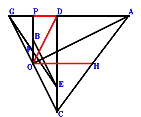
\(\because \) BOCE is a parallelogram \(\therefore \small\overrightarrow{OE}=\small\overrightarrow{OB} + \small\overrightarrow{OC}\).\(\because \) F is the midpoint of BO \(\therefore \small\overrightarrow{OF}=\dfrac{\small\overrightarrow{OB}}{2}\).\(\because \) F is the midpoint of GE \(\therefore \small\overrightarrow{OG}=\small\overrightarrow{OB} - \small\overrightarrow{OE}=- \small\overrightarrow{OC}\).\(\because \) H is the midpoint of CA \(\therefore \small\overrightarrow{OH}=\dfrac{\small\overrightarrow{OA}}{2} + \dfrac{\small\overrightarrow{OC}}{2}\).\(\because \) GOA is a triangle with GO⊥OA and OP⊥GA where P lies on GA \(\therefore \small\overrightarrow{AG} \cdot \small\overrightarrow{PA} + \small\overrightarrow{OA}^{2}=\small\overrightarrow{OA}^{2} + \left(- \small\overrightarrow{OA} + \small\overrightarrow{OG}\right) \cdot \left(\small\overrightarrow{OA} - \small\overrightarrow{OP}\right)=\small\overrightarrow{OA}^{2} + \left(- \small\overrightarrow{OA} - \small\overrightarrow{OC}\right) \cdot \left(\small\overrightarrow{OA} - \small\overrightarrow{OP}\right)=- \small\overrightarrow{OA} \cdot \small\overrightarrow{OC} + \small\overrightarrow{OA} \cdot \small\overrightarrow{OP} + \small\overrightarrow{OC} \cdot \small\overrightarrow{OP}=0\) . . . . . . \(①\)\(\because \) CD⊥DA \(\therefore \small\overrightarrow{AD} \cdot \small\overrightarrow{CD}=\left(- \small\overrightarrow{OA} + \small\overrightarrow{OD}\right) \cdot \left(- \small\overrightarrow{OC} + \small\overrightarrow{OD}\right)=\small\overrightarrow{OA} \cdot \small\overrightarrow{OC} - \small\overrightarrow{OA} \cdot \small\overrightarrow{OD} - \small\overrightarrow{OC} \cdot \small\overrightarrow{OD} + \small\overrightarrow{OD}^{2}=0\) . . . . . . \(②\)In conclusion, \(- 2 \small\overrightarrow{DP} \cdot \small\overrightarrow{OH} - \small\overrightarrow{OD}^{2}=- \small\overrightarrow{OD}^{2} - 2 \small\overrightarrow{OH} \cdot \left(- \small\overrightarrow{OD} + \small\overrightarrow{OP}\right)=- \small\overrightarrow{OD}^{2} - 2 \left(\dfrac{\small\overrightarrow{OA}}{2} + \dfrac{\small\overrightarrow{OC}}{2}\right) \cdot \left(- \small\overrightarrow{OD} + \small\overrightarrow{OP}\right)=\small\overrightarrow{OA} \cdot \small\overrightarrow{OD} - \small\overrightarrow{OA} \cdot \small\overrightarrow{OP} + \small\overrightarrow{OC} \cdot \small\overrightarrow{OD} - \small\overrightarrow{OC} \cdot \small\overrightarrow{OP} - \small\overrightarrow{OD}^{2}=-①-②=0\)\(\because\) OH//PD \(\therefore\) \(OD^{2}=2 OH \cdot PD\).
Exercise 147： Let HOA be a triangle with HO⊥OA and OP⊥HA where P lies on HA. I is the midpoint of CA. E is the midpoint of OF and BC. G is the midpoint of HF and OB. CD⊥DA. Given that OI//PD, prove that \(OD^{2}=2 OI \cdot PD\).
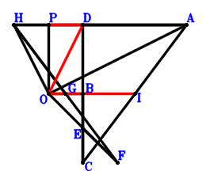
\(\because \) E is the midpoint of BC \(\therefore \small\overrightarrow{OE}=\dfrac{\small\overrightarrow{OB}}{2} + \dfrac{\small\overrightarrow{OC}}{2}\).\(\because \) E is the midpoint of OF \(\therefore \small\overrightarrow{OF}=2 \small\overrightarrow{OE}=\small\overrightarrow{OB} + \small\overrightarrow{OC}\).\(\because \) G is the midpoint of OB \(\therefore \small\overrightarrow{OG}=\dfrac{\small\overrightarrow{OB}}{2}\).\(\because \) G is the midpoint of HF \(\therefore \small\overrightarrow{OH}=\small\overrightarrow{OB} - \small\overrightarrow{OF}=- \small\overrightarrow{OC}\).\(\because \) I is the midpoint of CA \(\therefore \small\overrightarrow{OI}=\dfrac{\small\overrightarrow{OA}}{2} + \dfrac{\small\overrightarrow{OC}}{2}\).\(\because \) HOA is a triangle with HO⊥OA and OP⊥HA where P lies on HA \(\therefore \small\overrightarrow{AH} \cdot \small\overrightarrow{PA} + \small\overrightarrow{OA}^{2}=\small\overrightarrow{OA}^{2} + \left(- \small\overrightarrow{OA} + \small\overrightarrow{OH}\right) \cdot \left(\small\overrightarrow{OA} - \small\overrightarrow{OP}\right)=\small\overrightarrow{OA}^{2} + \left(- \small\overrightarrow{OA} - \small\overrightarrow{OC}\right) \cdot \left(\small\overrightarrow{OA} - \small\overrightarrow{OP}\right)=- \small\overrightarrow{OA} \cdot \small\overrightarrow{OC} + \small\overrightarrow{OA} \cdot \small\overrightarrow{OP} + \small\overrightarrow{OC} \cdot \small\overrightarrow{OP}=0\) . . . . . . \(①\)\(\because \) CD⊥DA \(\therefore \small\overrightarrow{AD} \cdot \small\overrightarrow{CD}=\left(- \small\overrightarrow{OA} + \small\overrightarrow{OD}\right) \cdot \left(- \small\overrightarrow{OC} + \small\overrightarrow{OD}\right)=\small\overrightarrow{OA} \cdot \small\overrightarrow{OC} - \small\overrightarrow{OA} \cdot \small\overrightarrow{OD} - \small\overrightarrow{OC} \cdot \small\overrightarrow{OD} + \small\overrightarrow{OD}^{2}=0\) . . . . . . \(②\)In conclusion, \(- 2 \small\overrightarrow{DP} \cdot \small\overrightarrow{OI} - \small\overrightarrow{OD}^{2}=- \small\overrightarrow{OD}^{2} - 2 \small\overrightarrow{OI} \cdot \left(- \small\overrightarrow{OD} + \small\overrightarrow{OP}\right)=- \small\overrightarrow{OD}^{2} - 2 \left(\dfrac{\small\overrightarrow{OA}}{2} + \dfrac{\small\overrightarrow{OC}}{2}\right) \cdot \left(- \small\overrightarrow{OD} + \small\overrightarrow{OP}\right)=\small\overrightarrow{OA} \cdot \small\overrightarrow{OD} - \small\overrightarrow{OA} \cdot \small\overrightarrow{OP} + \small\overrightarrow{OC} \cdot \small\overrightarrow{OD} - \small\overrightarrow{OC} \cdot \small\overrightarrow{OP} - \small\overrightarrow{OD}^{2}=-①-②=0\)\(\because\) OI//PD \(\therefore\) \(OD^{2}=2 OI \cdot PD\).
Exercise 153： Let FOCE be a trapezoid with OC//FE and OC=2FE. GOA is a triangle with GO⊥OA and OP⊥GA where P lies on GA. E, H, F are the midpoints of OB, AC, GB, respectively. AD⊥DC. Given that OH//PD, prove that \(DO^{2}=2 OH \cdot PD\).
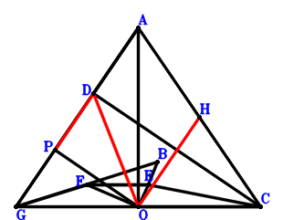
\(\because \) E is the midpoint of OB \(\therefore \small\overrightarrow{OE}=\dfrac{\small\overrightarrow{OB}}{2}\).\(\because \) OC//FE and OC=2FE \(\therefore \small\overrightarrow{OF}=\dfrac{\small\overrightarrow{OB}}{2} - \dfrac{\small\overrightarrow{OC}}{2}\).\(\because \) F is the midpoint of GB \(\therefore \small\overrightarrow{OG}=- \small\overrightarrow{OB} + 2 \small\overrightarrow{OF}=- \small\overrightarrow{OC}\).\(\because \) H is the midpoint of AC \(\therefore \small\overrightarrow{OH}=\dfrac{\small\overrightarrow{OA}}{2} + \dfrac{\small\overrightarrow{OC}}{2}\).\(\because \) GOA is a triangle with GO⊥OA and OP⊥GA where P lies on GA \(\therefore \small\overrightarrow{AG} \cdot \small\overrightarrow{PA} + \small\overrightarrow{OA}^{2}=\small\overrightarrow{OA}^{2} + \left(- \small\overrightarrow{OA} + \small\overrightarrow{OG}\right) \cdot \left(\small\overrightarrow{OA} - \small\overrightarrow{OP}\right)=\small\overrightarrow{OA}^{2} + \left(- \small\overrightarrow{OA} - \small\overrightarrow{OC}\right) \cdot \left(\small\overrightarrow{OA} - \small\overrightarrow{OP}\right)=- \small\overrightarrow{OA} \cdot \small\overrightarrow{OC} + \small\overrightarrow{OA} \cdot \small\overrightarrow{OP} + \small\overrightarrow{OC} \cdot \small\overrightarrow{OP}=0\) . . . . . . \(①\)\(\because \) AD⊥DC \(\therefore \small\overrightarrow{AD} \cdot \small\overrightarrow{CD}=\left(- \small\overrightarrow{OA} + \small\overrightarrow{OD}\right) \cdot \left(- \small\overrightarrow{OC} + \small\overrightarrow{OD}\right)=\small\overrightarrow{OA} \cdot \small\overrightarrow{OC} - \small\overrightarrow{OA} \cdot \small\overrightarrow{OD} - \small\overrightarrow{OC} \cdot \small\overrightarrow{OD} + \small\overrightarrow{OD}^{2}=0\) . . . . . . \(②\)In conclusion, \(- 2 \small\overrightarrow{DP} \cdot \small\overrightarrow{OH} - \small\overrightarrow{OD}^{2}=- \small\overrightarrow{OD}^{2} - 2 \small\overrightarrow{OH} \cdot \left(- \small\overrightarrow{OD} + \small\overrightarrow{OP}\right)=- \small\overrightarrow{OD}^{2} - 2 \left(\dfrac{\small\overrightarrow{OA}}{2} + \dfrac{\small\overrightarrow{OC}}{2}\right) \cdot \left(- \small\overrightarrow{OD} + \small\overrightarrow{OP}\right)=\small\overrightarrow{OA} \cdot \small\overrightarrow{OD} - \small\overrightarrow{OA} \cdot \small\overrightarrow{OP} + \small\overrightarrow{OC} \cdot \small\overrightarrow{OD} - \small\overrightarrow{OC} \cdot \small\overrightarrow{OP} - \small\overrightarrow{OD}^{2}=-①-②=0\)\(\because\) OH//PD \(\therefore\) \(DO^{2}=2 OH \cdot PD\).
Exercise 490： Let FAGC be a parallelogram. O, E are the midpoints of FB, AC, respectively. OE⊥DP. OA=DO. Given that D, A, C are collinear and PA//BG, prove that \(DA·DC=BG·PA\).
Exercise 499： Let GBCO be a trapezoid with BC//GO and BC=2GO. E, F are the midpoints of AC, BA, respectively. OE⊥DP. OA=DO. Given that D, A, C are collinear and PA//GF, prove that \(DA·DC=2·GF·PA\).
Exercise 547： Let FAOC be a parallelogram. AOD is a triangle with AO⊥OD and OC⊥AD where C lies on AD. E is the midpoint of AC. EO⊥PD. Given that AP//FO, prove that \(AO^{2}=AP \cdot FO\).
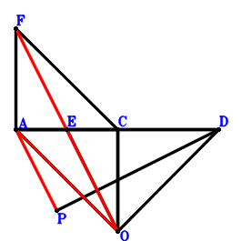
\(\because \) E is the midpoint of AC \(\therefore \small\overrightarrow{OE}=\dfrac{\small\overrightarrow{OA}}{2} + \dfrac{\small\overrightarrow{OC}}{2}\).\(\because \) FAOC is a parallelogram \(\therefore \small\overrightarrow{OF}=\small\overrightarrow{OA} + \small\overrightarrow{OC}\).\(\because \) AOD is a triangle with AO⊥OD and OC⊥AD where C lies on AD \(\therefore \small\overrightarrow{AD} \cdot \small\overrightarrow{CD} - \small\overrightarrow{OD}^{2}=- \small\overrightarrow{OD}^{2} + \left(- \small\overrightarrow{OA} + \small\overrightarrow{OD}\right) \cdot \left(- \small\overrightarrow{OC} + \small\overrightarrow{OD}\right)=\small\overrightarrow{OA} \cdot \small\overrightarrow{OC} - \small\overrightarrow{OA} \cdot \small\overrightarrow{OD} - \small\overrightarrow{OC} \cdot \small\overrightarrow{OD}=0\) . . . . . . \(①\)\(\because \) EO⊥PD \(\therefore \small\overrightarrow{DP} \cdot \small\overrightarrow{OE}=\small\overrightarrow{OE} \cdot \left(- \small\overrightarrow{OD} + \small\overrightarrow{OP}\right)=\left(\dfrac{\small\overrightarrow{OA}}{2} + \dfrac{\small\overrightarrow{OC}}{2}\right) \cdot \left(- \small\overrightarrow{OD} + \small\overrightarrow{OP}\right)=- \dfrac{\small\overrightarrow{OA} \cdot \small\overrightarrow{OD}}{2} + \dfrac{\small\overrightarrow{OA} \cdot \small\overrightarrow{OP}}{2} - \dfrac{\small\overrightarrow{OC} \cdot \small\overrightarrow{OD}}{2} + \dfrac{\small\overrightarrow{OC} \cdot \small\overrightarrow{OP}}{2}=0\) . . . . . . \(②\)In conclusion, \(\small\overrightarrow{FO} \cdot \small\overrightarrow{PA} + \small\overrightarrow{OA}^{2}=\small\overrightarrow{OA}^{2} - \small\overrightarrow{OF} \cdot \left(\small\overrightarrow{OA} - \small\overrightarrow{OP}\right)=\small\overrightarrow{OA}^{2} - \left(\small\overrightarrow{OA} + \small\overrightarrow{OC}\right) \cdot \left(\small\overrightarrow{OA} - \small\overrightarrow{OP}\right)=- \small\overrightarrow{OA} \cdot \small\overrightarrow{OC} + \small\overrightarrow{OA} \cdot \small\overrightarrow{OP} + \small\overrightarrow{OC} \cdot \small\overrightarrow{OP}=-①+2\cdot②=0\)\(\because\) AP//FO \(\therefore\) \(AO^{2}=AP \cdot FO\).
Exercise 549： Let FAOB be a parallelogram. AOD is a triangle with AO⊥OD and OC⊥AD where C lies on AD. H, E, G are the midpoints of BO, AC, FC, respectively. EO⊥PD. Given that AP//GH, prove that \(AO^{2}=2 AP \cdot GH\).
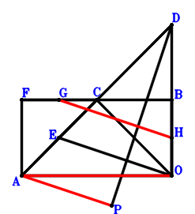
\(\because \) E is the midpoint of AC \(\therefore \small\overrightarrow{OE}=\dfrac{\small\overrightarrow{OA}}{2} + \dfrac{\small\overrightarrow{OC}}{2}\).\(\because \) FAOB is a parallelogram \(\therefore \small\overrightarrow{OF}=\small\overrightarrow{OA} + \small\overrightarrow{OB}\).\(\because \) G is the midpoint of FC \(\therefore \small\overrightarrow{OG}=\dfrac{\small\overrightarrow{OC}}{2} + \dfrac{\small\overrightarrow{OF}}{2}=\dfrac{\small\overrightarrow{OA}}{2} + \dfrac{\small\overrightarrow{OB}}{2} + \dfrac{\small\overrightarrow{OC}}{2}\).\(\because \) H is the midpoint of BO \(\therefore \small\overrightarrow{OH}=\dfrac{\small\overrightarrow{OB}}{2}\).\(\because \) AOD is a triangle with AO⊥OD and OC⊥AD where C lies on AD \(\therefore \small\overrightarrow{AD} \cdot \small\overrightarrow{CD} - \small\overrightarrow{OD}^{2}=- \small\overrightarrow{OD}^{2} + \left(- \small\overrightarrow{OA} + \small\overrightarrow{OD}\right) \cdot \left(- \small\overrightarrow{OC} + \small\overrightarrow{OD}\right)=\small\overrightarrow{OA} \cdot \small\overrightarrow{OC} - \small\overrightarrow{OA} \cdot \small\overrightarrow{OD} - \small\overrightarrow{OC} \cdot \small\overrightarrow{OD}=0\) . . . . . . \(①\)\(\because \) EO⊥PD \(\therefore \small\overrightarrow{DP} \cdot \small\overrightarrow{OE}=\small\overrightarrow{OE} \cdot \left(- \small\overrightarrow{OD} + \small\overrightarrow{OP}\right)=\left(\dfrac{\small\overrightarrow{OA}}{2} + \dfrac{\small\overrightarrow{OC}}{2}\right) \cdot \left(- \small\overrightarrow{OD} + \small\overrightarrow{OP}\right)=- \dfrac{\small\overrightarrow{OA} \cdot \small\overrightarrow{OD}}{2} + \dfrac{\small\overrightarrow{OA} \cdot \small\overrightarrow{OP}}{2} - \dfrac{\small\overrightarrow{OC} \cdot \small\overrightarrow{OD}}{2} + \dfrac{\small\overrightarrow{OC} \cdot \small\overrightarrow{OP}}{2}=0\) . . . . . . \(②\)In conclusion, \(2 \small\overrightarrow{GH} \cdot \small\overrightarrow{PA} + \small\overrightarrow{OA}^{2}=\small\overrightarrow{OA}^{2} + 2 \left(\small\overrightarrow{OA} - \small\overrightarrow{OP}\right) \cdot \left(- \small\overrightarrow{OG} + \small\overrightarrow{OH}\right)=\small\overrightarrow{OA}^{2} + 2 \left(- \dfrac{\small\overrightarrow{OA}}{2} - \dfrac{\small\overrightarrow{OC}}{2}\right) \cdot \left(\small\overrightarrow{OA} - \small\overrightarrow{OP}\right)=- \small\overrightarrow{OA} \cdot \small\overrightarrow{OC} + \small\overrightarrow{OA} \cdot \small\overrightarrow{OP} + \small\overrightarrow{OC} \cdot \small\overrightarrow{OP}=-①+2\cdot②=0\)\(\because\) AP//GH \(\therefore\) \(AO^{2}=2 AP \cdot GH\).
Exercise 576： Let F be the centroid of △BAC. AOD is a triangle with AO⊥OD and OC⊥AD where C lies on AD. O, F, G are collinear and OG=3FG. H, E are the midpoints of BO, CA, respectively. OE⊥DP. Given that PA//HG, prove that \(OA^{2}=2 HG \cdot PA\).
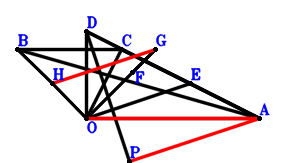
\(\because \) E is the midpoint of CA \(\therefore \small\overrightarrow{OE}=\dfrac{\small\overrightarrow{OA}}{2} + \dfrac{\small\overrightarrow{OC}}{2}\).\(\because \) F is the centroid of △BAC \(\therefore \small\overrightarrow{OF}=\dfrac{\small\overrightarrow{OA}}{3} + \dfrac{\small\overrightarrow{OB}}{3} + \dfrac{\small\overrightarrow{OC}}{3}\).\(\because \) O, F, G are collinear and OG=3FG \(\therefore \small\overrightarrow{OG}=\dfrac{3 \small\overrightarrow{OF}}{2}=\dfrac{\small\overrightarrow{OA}}{2} + \dfrac{\small\overrightarrow{OB}}{2} + \dfrac{\small\overrightarrow{OC}}{2}\).\(\because \) H is the midpoint of BO \(\therefore \small\overrightarrow{OH}=\dfrac{\small\overrightarrow{OB}}{2}\).\(\because \) AOD is a triangle with AO⊥OD and OC⊥AD where C lies on AD \(\therefore \small\overrightarrow{AD} \cdot \small\overrightarrow{CD} - \small\overrightarrow{OD}^{2}=- \small\overrightarrow{OD}^{2} + \left(- \small\overrightarrow{OA} + \small\overrightarrow{OD}\right) \cdot \left(- \small\overrightarrow{OC} + \small\overrightarrow{OD}\right)=\small\overrightarrow{OA} \cdot \small\overrightarrow{OC} - \small\overrightarrow{OA} \cdot \small\overrightarrow{OD} - \small\overrightarrow{OC} \cdot \small\overrightarrow{OD}=0\) . . . . . . \(①\)\(\because \) OE⊥DP \(\therefore \small\overrightarrow{DP} \cdot \small\overrightarrow{OE}=\small\overrightarrow{OE} \cdot \left(- \small\overrightarrow{OD} + \small\overrightarrow{OP}\right)=\left(\dfrac{\small\overrightarrow{OA}}{2} + \dfrac{\small\overrightarrow{OC}}{2}\right) \cdot \left(- \small\overrightarrow{OD} + \small\overrightarrow{OP}\right)=- \dfrac{\small\overrightarrow{OA} \cdot \small\overrightarrow{OD}}{2} + \dfrac{\small\overrightarrow{OA} \cdot \small\overrightarrow{OP}}{2} - \dfrac{\small\overrightarrow{OC} \cdot \small\overrightarrow{OD}}{2} + \dfrac{\small\overrightarrow{OC} \cdot \small\overrightarrow{OP}}{2}=0\) . . . . . . \(②\)In conclusion, \(2 \small\overrightarrow{GH} \cdot \small\overrightarrow{PA} + \small\overrightarrow{OA}^{2}=\small\overrightarrow{OA}^{2} + 2 \left(\small\overrightarrow{OA} - \small\overrightarrow{OP}\right) \cdot \left(- \small\overrightarrow{OG} + \small\overrightarrow{OH}\right)=\small\overrightarrow{OA}^{2} + 2 \left(- \dfrac{\small\overrightarrow{OA}}{2} - \dfrac{\small\overrightarrow{OC}}{2}\right) \cdot \left(\small\overrightarrow{OA} - \small\overrightarrow{OP}\right)=- \small\overrightarrow{OA} \cdot \small\overrightarrow{OC} + \small\overrightarrow{OA} \cdot \small\overrightarrow{OP} + \small\overrightarrow{OC} \cdot \small\overrightarrow{OP}=-①+2\cdot②=0\)\(\because\) PA//HG \(\therefore\) \(OA^{2}=2 HG \cdot PA\).
Exercise 579： Let GOAF be a trapezoid with OA//GF and OA=2GF. AOD is a triangle with AO⊥OD and OC⊥AD where C lies on AD. F, E, G are the midpoints of BO, CA, HB, respectively. OE⊥DP. Given that HC//PA, prove that \(OA^{2}=HC \cdot PA\).
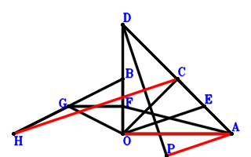
\(\because \) E is the midpoint of CA \(\therefore \small\overrightarrow{OE}=\dfrac{\small\overrightarrow{OA}}{2} + \dfrac{\small\overrightarrow{OC}}{2}\).\(\because \) F is the midpoint of BO \(\therefore \small\overrightarrow{OF}=\dfrac{\small\overrightarrow{OB}}{2}\).\(\because \) OA//GF and OA=2GF \(\therefore \small\overrightarrow{OG}=- \dfrac{\small\overrightarrow{OA}}{2} + \dfrac{\small\overrightarrow{OB}}{2}\).\(\because \) G is the midpoint of HB \(\therefore \small\overrightarrow{OH}=- \small\overrightarrow{OB} + 2 \small\overrightarrow{OG}=- \small\overrightarrow{OA}\).\(\because \) AOD is a triangle with AO⊥OD and OC⊥AD where C lies on AD \(\therefore \small\overrightarrow{AD} \cdot \small\overrightarrow{CD} - \small\overrightarrow{OD}^{2}=- \small\overrightarrow{OD}^{2} + \left(- \small\overrightarrow{OA} + \small\overrightarrow{OD}\right) \cdot \left(- \small\overrightarrow{OC} + \small\overrightarrow{OD}\right)=\small\overrightarrow{OA} \cdot \small\overrightarrow{OC} - \small\overrightarrow{OA} \cdot \small\overrightarrow{OD} - \small\overrightarrow{OC} \cdot \small\overrightarrow{OD}=0\) . . . . . . \(①\)\(\because \) OE⊥DP \(\therefore \small\overrightarrow{DP} \cdot \small\overrightarrow{OE}=\small\overrightarrow{OE} \cdot \left(- \small\overrightarrow{OD} + \small\overrightarrow{OP}\right)=\left(\dfrac{\small\overrightarrow{OA}}{2} + \dfrac{\small\overrightarrow{OC}}{2}\right) \cdot \left(- \small\overrightarrow{OD} + \small\overrightarrow{OP}\right)=- \dfrac{\small\overrightarrow{OA} \cdot \small\overrightarrow{OD}}{2} + \dfrac{\small\overrightarrow{OA} \cdot \small\overrightarrow{OP}}{2} - \dfrac{\small\overrightarrow{OC} \cdot \small\overrightarrow{OD}}{2} + \dfrac{\small\overrightarrow{OC} \cdot \small\overrightarrow{OP}}{2}=0\) . . . . . . \(②\)In conclusion, \(\small\overrightarrow{CH} \cdot \small\overrightarrow{PA} + \small\overrightarrow{OA}^{2}=\small\overrightarrow{OA}^{2} + \left(\small\overrightarrow{OA} - \small\overrightarrow{OP}\right) \cdot \left(- \small\overrightarrow{OC} + \small\overrightarrow{OH}\right)=\small\overrightarrow{OA}^{2} + \left(- \small\overrightarrow{OA} - \small\overrightarrow{OC}\right) \cdot \left(\small\overrightarrow{OA} - \small\overrightarrow{OP}\right)=- \small\overrightarrow{OA} \cdot \small\overrightarrow{OC} + \small\overrightarrow{OA} \cdot \small\overrightarrow{OP} + \small\overrightarrow{OC} \cdot \small\overrightarrow{OP}=-①+2\cdot②=0\)\(\because\) HC//PA \(\therefore\) \(OA^{2}=HC \cdot PA\).
Exercise 595： Let CBGO be a parallelogram. AOD is a triangle with AO⊥OD and OC⊥AD where C lies on AD. E, H, F are the midpoints of AC, OG, AB, respectively. EO⊥PD. Given that AP//FH, prove that \(AO^{2}=2 AP \cdot FH\).
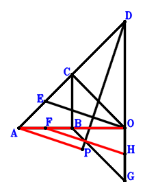
\(\because \) E is the midpoint of AC \(\therefore \small\overrightarrow{OE}=\dfrac{\small\overrightarrow{OA}}{2} + \dfrac{\small\overrightarrow{OC}}{2}\).\(\because \) F is the midpoint of AB \(\therefore \small\overrightarrow{OF}=\dfrac{\small\overrightarrow{OA}}{2} + \dfrac{\small\overrightarrow{OB}}{2}\).\(\because \) CBGO is a parallelogram \(\therefore \small\overrightarrow{OG}=\small\overrightarrow{OB} - \small\overrightarrow{OC}\).\(\because \) H is the midpoint of OG \(\therefore \small\overrightarrow{OH}=\dfrac{\small\overrightarrow{OG}}{2}=\dfrac{\small\overrightarrow{OB}}{2} - \dfrac{\small\overrightarrow{OC}}{2}\).\(\because \) AOD is a triangle with AO⊥OD and OC⊥AD where C lies on AD \(\therefore \small\overrightarrow{AD} \cdot \small\overrightarrow{CD} - \small\overrightarrow{OD}^{2}=- \small\overrightarrow{OD}^{2} + \left(- \small\overrightarrow{OA} + \small\overrightarrow{OD}\right) \cdot \left(- \small\overrightarrow{OC} + \small\overrightarrow{OD}\right)=\small\overrightarrow{OA} \cdot \small\overrightarrow{OC} - \small\overrightarrow{OA} \cdot \small\overrightarrow{OD} - \small\overrightarrow{OC} \cdot \small\overrightarrow{OD}=0\) . . . . . . \(①\)\(\because \) EO⊥PD \(\therefore \small\overrightarrow{DP} \cdot \small\overrightarrow{OE}=\small\overrightarrow{OE} \cdot \left(- \small\overrightarrow{OD} + \small\overrightarrow{OP}\right)=\left(\dfrac{\small\overrightarrow{OA}}{2} + \dfrac{\small\overrightarrow{OC}}{2}\right) \cdot \left(- \small\overrightarrow{OD} + \small\overrightarrow{OP}\right)=- \dfrac{\small\overrightarrow{OA} \cdot \small\overrightarrow{OD}}{2} + \dfrac{\small\overrightarrow{OA} \cdot \small\overrightarrow{OP}}{2} - \dfrac{\small\overrightarrow{OC} \cdot \small\overrightarrow{OD}}{2} + \dfrac{\small\overrightarrow{OC} \cdot \small\overrightarrow{OP}}{2}=0\) . . . . . . \(②\)In conclusion, \(2 \small\overrightarrow{FH} \cdot \small\overrightarrow{PA} + \small\overrightarrow{OA}^{2}=\small\overrightarrow{OA}^{2} + 2 \left(\small\overrightarrow{OA} - \small\overrightarrow{OP}\right) \cdot \left(- \small\overrightarrow{OF} + \small\overrightarrow{OH}\right)=\small\overrightarrow{OA}^{2} + 2 \left(- \dfrac{\small\overrightarrow{OA}}{2} - \dfrac{\small\overrightarrow{OC}}{2}\right) \cdot \left(\small\overrightarrow{OA} - \small\overrightarrow{OP}\right)=- \small\overrightarrow{OA} \cdot \small\overrightarrow{OC} + \small\overrightarrow{OA} \cdot \small\overrightarrow{OP} + \small\overrightarrow{OC} \cdot \small\overrightarrow{OP}=-①+2\cdot②=0\)\(\because\) AP//FH \(\therefore\) \(AO^{2}=2 AP \cdot FH\).
Exercise 597： Let GBOF and COAF be parallelograms. AOD is a triangle with AO⊥OD and OC⊥AD where C lies on AD. E is the midpoint of CA. OE⊥DP. Given that PA//BG, prove that \(OA^{2}=BG \cdot PA\).
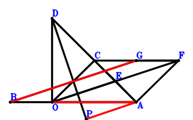
\(\because \) E is the midpoint of CA \(\therefore \small\overrightarrow{OE}=\dfrac{\small\overrightarrow{OA}}{2} + \dfrac{\small\overrightarrow{OC}}{2}\).\(\because \) COAF is a parallelogram \(\therefore \small\overrightarrow{OF}=\small\overrightarrow{OA} + \small\overrightarrow{OC}\).\(\because \) GBOF is a parallelogram \(\therefore \small\overrightarrow{OG}=\small\overrightarrow{OA} + \small\overrightarrow{OB} + \small\overrightarrow{OC}\).\(\because \) AOD is a triangle with AO⊥OD and OC⊥AD where C lies on AD \(\therefore \small\overrightarrow{AD} \cdot \small\overrightarrow{CD} - \small\overrightarrow{OD}^{2}=- \small\overrightarrow{OD}^{2} + \left(- \small\overrightarrow{OA} + \small\overrightarrow{OD}\right) \cdot \left(- \small\overrightarrow{OC} + \small\overrightarrow{OD}\right)=\small\overrightarrow{OA} \cdot \small\overrightarrow{OC} - \small\overrightarrow{OA} \cdot \small\overrightarrow{OD} - \small\overrightarrow{OC} \cdot \small\overrightarrow{OD}=0\) . . . . . . \(①\)\(\because \) OE⊥DP \(\therefore \small\overrightarrow{DP} \cdot \small\overrightarrow{OE}=\small\overrightarrow{OE} \cdot \left(- \small\overrightarrow{OD} + \small\overrightarrow{OP}\right)=\left(\dfrac{\small\overrightarrow{OA}}{2} + \dfrac{\small\overrightarrow{OC}}{2}\right) \cdot \left(- \small\overrightarrow{OD} + \small\overrightarrow{OP}\right)=- \dfrac{\small\overrightarrow{OA} \cdot \small\overrightarrow{OD}}{2} + \dfrac{\small\overrightarrow{OA} \cdot \small\overrightarrow{OP}}{2} - \dfrac{\small\overrightarrow{OC} \cdot \small\overrightarrow{OD}}{2} + \dfrac{\small\overrightarrow{OC} \cdot \small\overrightarrow{OP}}{2}=0\) . . . . . . \(②\)In conclusion, \(\small\overrightarrow{GB} \cdot \small\overrightarrow{PA} + \small\overrightarrow{OA}^{2}=\small\overrightarrow{OA}^{2} + \left(\small\overrightarrow{OA} - \small\overrightarrow{OP}\right) \cdot \left(\small\overrightarrow{OB} - \small\overrightarrow{OG}\right)=\small\overrightarrow{OA}^{2} + \left(- \small\overrightarrow{OA} - \small\overrightarrow{OC}\right) \cdot \left(\small\overrightarrow{OA} - \small\overrightarrow{OP}\right)=- \small\overrightarrow{OA} \cdot \small\overrightarrow{OC} + \small\overrightarrow{OA} \cdot \small\overrightarrow{OP} + \small\overrightarrow{OC} \cdot \small\overrightarrow{OP}=-①+2\cdot②=0\)\(\because\) PA//BG \(\therefore\) \(OA^{2}=BG \cdot PA\).
Exercise 610： Let HGBC be a parallelogram. AOD is a triangle with AO⊥OD and OC⊥AD where C lies on AD. E is the midpoint of CA. F is the midpoint of GO and BA. OE⊥DP. Given that PA//OH, prove that \(OA^{2}=OH \cdot PA\).
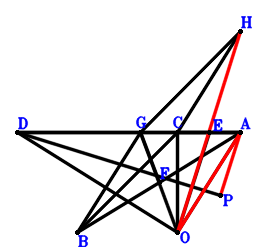
\(\because \) E is the midpoint of CA \(\therefore \small\overrightarrow{OE}=\dfrac{\small\overrightarrow{OA}}{2} + \dfrac{\small\overrightarrow{OC}}{2}\).\(\because \) F is the midpoint of BA \(\therefore \small\overrightarrow{OF}=\dfrac{\small\overrightarrow{OA}}{2} + \dfrac{\small\overrightarrow{OB}}{2}\).\(\because \) F is the midpoint of GO \(\therefore \small\overrightarrow{OG}=2 \small\overrightarrow{OF}=\small\overrightarrow{OA} + \small\overrightarrow{OB}\).\(\because \) HGBC is a parallelogram \(\therefore \small\overrightarrow{OH}=\small\overrightarrow{OA} + \small\overrightarrow{OC}\).\(\because \) AOD is a triangle with AO⊥OD and OC⊥AD where C lies on AD \(\therefore \small\overrightarrow{AD} \cdot \small\overrightarrow{CD} - \small\overrightarrow{OD}^{2}=- \small\overrightarrow{OD}^{2} + \left(- \small\overrightarrow{OA} + \small\overrightarrow{OD}\right) \cdot \left(- \small\overrightarrow{OC} + \small\overrightarrow{OD}\right)=\small\overrightarrow{OA} \cdot \small\overrightarrow{OC} - \small\overrightarrow{OA} \cdot \small\overrightarrow{OD} - \small\overrightarrow{OC} \cdot \small\overrightarrow{OD}=0\) . . . . . . \(①\)\(\because \) OE⊥DP \(\therefore \small\overrightarrow{DP} \cdot \small\overrightarrow{OE}=\small\overrightarrow{OE} \cdot \left(- \small\overrightarrow{OD} + \small\overrightarrow{OP}\right)=\left(\dfrac{\small\overrightarrow{OA}}{2} + \dfrac{\small\overrightarrow{OC}}{2}\right) \cdot \left(- \small\overrightarrow{OD} + \small\overrightarrow{OP}\right)=- \dfrac{\small\overrightarrow{OA} \cdot \small\overrightarrow{OD}}{2} + \dfrac{\small\overrightarrow{OA} \cdot \small\overrightarrow{OP}}{2} - \dfrac{\small\overrightarrow{OC} \cdot \small\overrightarrow{OD}}{2} + \dfrac{\small\overrightarrow{OC} \cdot \small\overrightarrow{OP}}{2}=0\) . . . . . . \(②\)In conclusion, \(\small\overrightarrow{HO} \cdot \small\overrightarrow{PA} + \small\overrightarrow{OA}^{2}=\small\overrightarrow{OA}^{2} - \small\overrightarrow{OH} \cdot \left(\small\overrightarrow{OA} - \small\overrightarrow{OP}\right)=\small\overrightarrow{OA}^{2} - \left(\small\overrightarrow{OA} + \small\overrightarrow{OC}\right) \cdot \left(\small\overrightarrow{OA} - \small\overrightarrow{OP}\right)=- \small\overrightarrow{OA} \cdot \small\overrightarrow{OC} + \small\overrightarrow{OA} \cdot \small\overrightarrow{OP} + \small\overrightarrow{OC} \cdot \small\overrightarrow{OP}=-①+2\cdot②=0\)\(\because\) PA//OH \(\therefore\) \(OA^{2}=OH \cdot PA\).
Exercise 621： Let HCGF be a trapezoid with CH//GF and CH=2GF. AOD is a triangle with AO⊥OD and OC⊥AD where C lies on AD. E, G, F are the midpoints of CA, BO, BA, respectively. OE⊥DP. Given that PA//OH, prove that \(OA^{2}=OH \cdot PA\).
\(\because \) E is the midpoint of CA \(\therefore \small\overrightarrow{OE}=\dfrac{\small\overrightarrow{OA}}{2} + \dfrac{\small\overrightarrow{OC}}{2}\).\(\because \) F is the midpoint of BA \(\therefore \small\overrightarrow{OF}=\dfrac{\small\overrightarrow{OA}}{2} + \dfrac{\small\overrightarrow{OB}}{2}\).\(\because \) G is the midpoint of BO \(\therefore \small\overrightarrow{OG}=\dfrac{\small\overrightarrow{OB}}{2}\).\(\because \) CH//GF and CH=2GF \(\therefore \small\overrightarrow{OH}=\small\overrightarrow{OA} + \small\overrightarrow{OB} + \small\overrightarrow{OC} - 2 \small\overrightarrow{OG}=\small\overrightarrow{OA} + \small\overrightarrow{OC}\).\(\because \) AOD is a triangle with AO⊥OD and OC⊥AD where C lies on AD \(\therefore \small\overrightarrow{AD} \cdot \small\overrightarrow{CD} - \small\overrightarrow{OD}^{2}=- \small\overrightarrow{OD}^{2} + \left(- \small\overrightarrow{OA} + \small\overrightarrow{OD}\right) \cdot \left(- \small\overrightarrow{OC} + \small\overrightarrow{OD}\right)=\small\overrightarrow{OA} \cdot \small\overrightarrow{OC} - \small\overrightarrow{OA} \cdot \small\overrightarrow{OD} - \small\overrightarrow{OC} \cdot \small\overrightarrow{OD}=0\) . . . . . . \(①\)\(\because \) OE⊥DP \(\therefore \small\overrightarrow{DP} \cdot \small\overrightarrow{OE}=\small\overrightarrow{OE} \cdot \left(- \small\overrightarrow{OD} + \small\overrightarrow{OP}\right)=\left(\dfrac{\small\overrightarrow{OA}}{2} + \dfrac{\small\overrightarrow{OC}}{2}\right) \cdot \left(- \small\overrightarrow{OD} + \small\overrightarrow{OP}\right)=- \dfrac{\small\overrightarrow{OA} \cdot \small\overrightarrow{OD}}{2} + \dfrac{\small\overrightarrow{OA} \cdot \small\overrightarrow{OP}}{2} - \dfrac{\small\overrightarrow{OC} \cdot \small\overrightarrow{OD}}{2} + \dfrac{\small\overrightarrow{OC} \cdot \small\overrightarrow{OP}}{2}=0\) . . . . . . \(②\)In conclusion, \(\small\overrightarrow{HO} \cdot \small\overrightarrow{PA} + \small\overrightarrow{OA}^{2}=\small\overrightarrow{OA}^{2} - \small\overrightarrow{OH} \cdot \left(\small\overrightarrow{OA} - \small\overrightarrow{OP}\right)=\small\overrightarrow{OA}^{2} - \left(\small\overrightarrow{OA} + \small\overrightarrow{OC}\right) \cdot \left(\small\overrightarrow{OA} - \small\overrightarrow{OP}\right)=- \small\overrightarrow{OA} \cdot \small\overrightarrow{OC} + \small\overrightarrow{OA} \cdot \small\overrightarrow{OP} + \small\overrightarrow{OC} \cdot \small\overrightarrow{OP}=-①+2\cdot②=0\)\(\because\) PA//OH \(\therefore\) \(OA^{2}=OH \cdot PA\).
Exercise 636： Let AOD be a triangle with AO⊥OD and OC⊥AD where C lies on AD. F, G, C are collinear and GC=2FG. E, G, B are collinear and EB=3EG. E, F are the midpoints of AC, AB, respectively. EO⊥PD. Given that AP//EO, prove that \(AO^{2}=2 AP \cdot EO\).
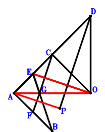
\(\because \) E is the midpoint of AC \(\therefore \small\overrightarrow{AE}=\dfrac{\small\overrightarrow{AC}}{2}\).\(\because \) F is the midpoint of AB \(\therefore \small\overrightarrow{AF}=\dfrac{\small\overrightarrow{AB}}{2}\).\(\because \) F, G, C are collinear and GC=2FG \(\therefore \small\overrightarrow{AG}=\dfrac{\small\overrightarrow{AC}}{3} + \dfrac{2 \small\overrightarrow{AF}}{3}=\dfrac{\small\overrightarrow{AB}}{3} + \dfrac{\small\overrightarrow{AC}}{3}\).\(\because \) E, G, B are collinear and EB=3EG \(\therefore \small\overrightarrow{AD} \cdot \small\overrightarrow{CD} - \small\overrightarrow{OD}^{2}=\small\overrightarrow{AD} \cdot \left(- \small\overrightarrow{AC} + \small\overrightarrow{AD}\right) - \left(\small\overrightarrow{AD} - \small\overrightarrow{AO}\right)^{2}=- \small\overrightarrow{AC} \cdot \small\overrightarrow{AD} + 2 \small\overrightarrow{AD} \cdot \small\overrightarrow{AO} - \small\overrightarrow{AO}^{2}=0\) . . . . . . \(①\)\(\because \) AOD is a triangle with AO⊥OD and OC⊥AD where C lies on AD \(\therefore \small\overrightarrow{DP} \cdot \small\overrightarrow{OE}=\left(- \small\overrightarrow{AD} + \small\overrightarrow{AP}\right) \cdot \left(\small\overrightarrow{AE} - \small\overrightarrow{AO}\right)=\left(\dfrac{\small\overrightarrow{AC}}{2} - \small\overrightarrow{AO}\right) \cdot \left(- \small\overrightarrow{AD} + \small\overrightarrow{AP}\right)=- \dfrac{\small\overrightarrow{AC} \cdot \small\overrightarrow{AD}}{2} + \dfrac{\small\overrightarrow{AC} \cdot \small\overrightarrow{AP}}{2} + \small\overrightarrow{AD} \cdot \small\overrightarrow{AO} - \small\overrightarrow{AO} \cdot \small\overrightarrow{AP}=0\) . . . . . . \(②\)In conclusion, \(2 \small\overrightarrow{EO} \cdot \small\overrightarrow{PA} + \small\overrightarrow{OA}^{2}=\small\overrightarrow{AO}^{2} - 2 \small\overrightarrow{AP} \cdot \left(- \small\overrightarrow{AE} + \small\overrightarrow{AO}\right)=\small\overrightarrow{AO}^{2} - 2 \small\overrightarrow{AP} \cdot \left(- \dfrac{\small\overrightarrow{AC}}{2} + \small\overrightarrow{AO}\right)=\small\overrightarrow{AC} \cdot \small\overrightarrow{AP} + \small\overrightarrow{AO}^{2} - 2 \small\overrightarrow{AO} \cdot \small\overrightarrow{AP}=-①+2\cdot②=0\)\(\because\) AP//EO \(\therefore\) \(AO^{2}=2 AP \cdot EO\).
Exercise 641： Let AOD be a triangle with AO⊥OD and OC⊥AD where C lies on AD. F is the centroid of △CBA. E, F, B are collinear and EB=3EF. OE⊥DP. Given that PA//OE, prove that \(OA^{2}=2 OE \cdot PA\).
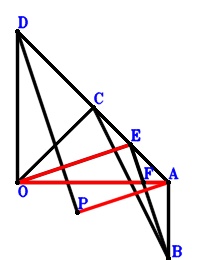
\(\because \) E is the midpoint of CA \(\therefore \small\overrightarrow{AE}=\dfrac{\small\overrightarrow{AC}}{2}\).\(\because \) F is the centroid of △CBA \(\therefore \small\overrightarrow{AF}=\dfrac{\small\overrightarrow{AB}}{3} + \dfrac{\small\overrightarrow{AC}}{3}\).\(\because \) E, F, B are collinear and EB=3EF \(\therefore \small\overrightarrow{AD} \cdot \small\overrightarrow{CD} - \small\overrightarrow{OD}^{2}=\small\overrightarrow{AD} \cdot \left(- \small\overrightarrow{AC} + \small\overrightarrow{AD}\right) - \left(\small\overrightarrow{AD} - \small\overrightarrow{AO}\right)^{2}=- \small\overrightarrow{AC} \cdot \small\overrightarrow{AD} + 2 \small\overrightarrow{AD} \cdot \small\overrightarrow{AO} - \small\overrightarrow{AO}^{2}=0\) . . . . . . \(①\)\(\because \) AOD is a triangle with AO⊥OD and OC⊥AD where C is on AD \(\therefore \small\overrightarrow{DP} \cdot \small\overrightarrow{OE}=\left(- \small\overrightarrow{AD} + \small\overrightarrow{AP}\right) \cdot \left(\small\overrightarrow{AE} - \small\overrightarrow{AO}\right)=\left(\dfrac{\small\overrightarrow{AC}}{2} - \small\overrightarrow{AO}\right) \cdot \left(- \small\overrightarrow{AD} + \small\overrightarrow{AP}\right)=- \dfrac{\small\overrightarrow{AC} \cdot \small\overrightarrow{AD}}{2} + \dfrac{\small\overrightarrow{AC} \cdot \small\overrightarrow{AP}}{2} + \small\overrightarrow{AD} \cdot \small\overrightarrow{AO} - \small\overrightarrow{AO} \cdot \small\overrightarrow{AP}=0\) . . . . . . \(②\)In conclusion, \(2 \small\overrightarrow{EO} \cdot \small\overrightarrow{PA} + \small\overrightarrow{OA}^{2}=\small\overrightarrow{AO}^{2} - 2 \small\overrightarrow{AP} \cdot \left(- \small\overrightarrow{AE} + \small\overrightarrow{AO}\right)=\small\overrightarrow{AO}^{2} - 2 \small\overrightarrow{AP} \cdot \left(- \dfrac{\small\overrightarrow{AC}}{2} + \small\overrightarrow{AO}\right)=\small\overrightarrow{AC} \cdot \small\overrightarrow{AP} + \small\overrightarrow{AO}^{2} - 2 \small\overrightarrow{AO} \cdot \small\overrightarrow{AP}=-①+2\cdot②=0\)\(\because\) PA//OE \(\therefore\) \(OA^{2}=2 OE \cdot PA\).
Exercise 654： Let AOD be a triangle with AO⊥OD and OC⊥AD where C lies on AD. O, E are the midpoints of FC, CA, respectively. OE⊥DP. Given that F, P, A are collinear, prove that \(OA^{2}=FA \cdot PA\).
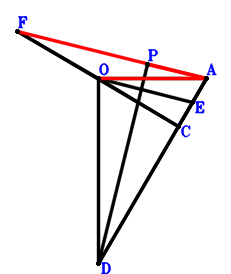
\(\because \) E is the midpoint of CA \(\therefore \small\overrightarrow{AE}=\dfrac{\small\overrightarrow{AC}}{2}\).\(\because \) O is the midpoint of FC \(\therefore \small\overrightarrow{AF}=- \small\overrightarrow{AC} + 2 \small\overrightarrow{AO}\).\(\because \) AOD is a triangle with AO⊥OD and OC⊥AD where C lies on AD \(\therefore \small\overrightarrow{AD} \cdot \small\overrightarrow{CD} - \small\overrightarrow{OD}^{2}=\small\overrightarrow{AD} \cdot \left(- \small\overrightarrow{AC} + \small\overrightarrow{AD}\right) - \left(\small\overrightarrow{AD} - \small\overrightarrow{AO}\right)^{2}=- \small\overrightarrow{AC} \cdot \small\overrightarrow{AD} + 2 \small\overrightarrow{AD} \cdot \small\overrightarrow{AO} - \small\overrightarrow{AO}^{2}=0\) . . . . . . \(①\)\(\because \) OE⊥DP \(\therefore \small\overrightarrow{DP} \cdot \small\overrightarrow{OE}=\left(- \small\overrightarrow{AD} + \small\overrightarrow{AP}\right) \cdot \left(\small\overrightarrow{AE} - \small\overrightarrow{AO}\right)=\left(\dfrac{\small\overrightarrow{AC}}{2} - \small\overrightarrow{AO}\right) \cdot \left(- \small\overrightarrow{AD} + \small\overrightarrow{AP}\right)=- \dfrac{\small\overrightarrow{AC} \cdot \small\overrightarrow{AD}}{2} + \dfrac{\small\overrightarrow{AC} \cdot \small\overrightarrow{AP}}{2} + \small\overrightarrow{AD} \cdot \small\overrightarrow{AO} - \small\overrightarrow{AO} \cdot \small\overrightarrow{AP}=0\) . . . . . . \(②\)In conclusion, \(- \small\overrightarrow{AF} \cdot \small\overrightarrow{AP} + \small\overrightarrow{AO}^{2}=\small\overrightarrow{AO}^{2} - \small\overrightarrow{AP} \cdot \left(- \small\overrightarrow{AC} + 2 \small\overrightarrow{AO}\right)=\small\overrightarrow{AC} \cdot \small\overrightarrow{AP} + \small\overrightarrow{AO}^{2} - 2 \small\overrightarrow{AO} \cdot \small\overrightarrow{AP}=-①+2\cdot②=0\)\(\because\) F, P, A are collinear \(\therefore\) \(OA^{2}=FA \cdot PA\).
Exercise 675： Let BECO be a parallelogram. GOA is a triangle with GO⊥OA and OP⊥GA where P lies on GA. H is the midpoint of AC. F is the midpoint of BO and EG. HO⊥PD. Given that A, C, D are collinear, prove that \(OD^{2}=AD \cdot CD\).
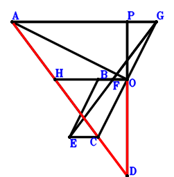
\(\because \) BECO is a parallelogram \(\therefore \small\overrightarrow{OE}=\small\overrightarrow{OB} + \small\overrightarrow{OC}\).\(\because \) F is the midpoint of BO \(\therefore \small\overrightarrow{OF}=\dfrac{\small\overrightarrow{OB}}{2}\).\(\because \) F is the midpoint of EG \(\therefore \small\overrightarrow{OG}=\small\overrightarrow{OB} - \small\overrightarrow{OE}=- \small\overrightarrow{OC}\).\(\because \) H is the midpoint of AC \(\therefore \small\overrightarrow{OH}=\dfrac{\small\overrightarrow{OA}}{2} + \dfrac{\small\overrightarrow{OC}}{2}\).\(\because \) GOA is a triangle with GO⊥OA and OP⊥GA where P lies on GA \(\therefore \small\overrightarrow{AG} \cdot \small\overrightarrow{PA} + \small\overrightarrow{OA}^{2}=\small\overrightarrow{OA}^{2} + \left(- \small\overrightarrow{OA} + \small\overrightarrow{OG}\right) \cdot \left(\small\overrightarrow{OA} - \small\overrightarrow{OP}\right)=\small\overrightarrow{OA}^{2} + \left(- \small\overrightarrow{OA} - \small\overrightarrow{OC}\right) \cdot \left(\small\overrightarrow{OA} - \small\overrightarrow{OP}\right)=- \small\overrightarrow{OA} \cdot \small\overrightarrow{OC} + \small\overrightarrow{OA} \cdot \small\overrightarrow{OP} + \small\overrightarrow{OC} \cdot \small\overrightarrow{OP}=0\) . . . . . . \(①\)\(\because \) HO⊥PD \(\therefore \small\overrightarrow{DP} \cdot \small\overrightarrow{OH}=\small\overrightarrow{OH} \cdot \left(- \small\overrightarrow{OD} + \small\overrightarrow{OP}\right)=\left(\dfrac{\small\overrightarrow{OA}}{2} + \dfrac{\small\overrightarrow{OC}}{2}\right) \cdot \left(- \small\overrightarrow{OD} + \small\overrightarrow{OP}\right)=- \dfrac{\small\overrightarrow{OA} \cdot \small\overrightarrow{OD}}{2} + \dfrac{\small\overrightarrow{OA} \cdot \small\overrightarrow{OP}}{2} - \dfrac{\small\overrightarrow{OC} \cdot \small\overrightarrow{OD}}{2} + \dfrac{\small\overrightarrow{OC} \cdot \small\overrightarrow{OP}}{2}=0\) . . . . . . \(②\)In conclusion, \(\small\overrightarrow{AD} \cdot \small\overrightarrow{CD} - \small\overrightarrow{OD}^{2}=- \small\overrightarrow{OD}^{2} + \left(- \small\overrightarrow{OA} + \small\overrightarrow{OD}\right) \cdot \left(- \small\overrightarrow{OC} + \small\overrightarrow{OD}\right)=\small\overrightarrow{OA} \cdot \small\overrightarrow{OC} - \small\overrightarrow{OA} \cdot \small\overrightarrow{OD} - \small\overrightarrow{OC} \cdot \small\overrightarrow{OD}=-①+2\cdot②=0\)\(\because\) A, C, D are collinear \(\therefore\) \(OD^{2}=AD \cdot CD\).
Exercise 683： Let CEFO be a trapezoid with CO//EF and CO=2EF. GOA is a triangle with GO⊥OA and OP⊥GA where P lies on GA. E, F, H are the midpoints of OB, BG, CA, respectively. HO⊥PD. Given that C, A, D are collinear, prove that \(OD^{2}=AD \cdot CD\).
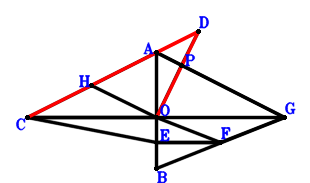
\(\because \) E is the midpoint of OB \(\therefore \small\overrightarrow{OE}=\dfrac{\small\overrightarrow{OB}}{2}\).\(\because \) CO//EF and CO=2EF \(\therefore \small\overrightarrow{OF}=\dfrac{\small\overrightarrow{OB}}{2} - \dfrac{\small\overrightarrow{OC}}{2}\).\(\because \) F is the midpoint of BG \(\therefore \small\overrightarrow{OG}=- \small\overrightarrow{OB} + 2 \small\overrightarrow{OF}=- \small\overrightarrow{OC}\).\(\because \) H is the midpoint of CA \(\therefore \small\overrightarrow{OH}=\dfrac{\small\overrightarrow{OA}}{2} + \dfrac{\small\overrightarrow{OC}}{2}\).\(\because \) GOA is a triangle with GO⊥OA and OP⊥GA where P lies on GA \(\therefore \small\overrightarrow{AG} \cdot \small\overrightarrow{PA} + \small\overrightarrow{OA}^{2}=\small\overrightarrow{OA}^{2} + \left(- \small\overrightarrow{OA} + \small\overrightarrow{OG}\right) \cdot \left(\small\overrightarrow{OA} - \small\overrightarrow{OP}\right)=\small\overrightarrow{OA}^{2} + \left(- \small\overrightarrow{OA} - \small\overrightarrow{OC}\right) \cdot \left(\small\overrightarrow{OA} - \small\overrightarrow{OP}\right)=- \small\overrightarrow{OA} \cdot \small\overrightarrow{OC} + \small\overrightarrow{OA} \cdot \small\overrightarrow{OP} + \small\overrightarrow{OC} \cdot \small\overrightarrow{OP}=0\) . . . . . . \(①\)\(\because \) HO⊥PD \(\therefore \small\overrightarrow{DP} \cdot \small\overrightarrow{OH}=\small\overrightarrow{OH} \cdot \left(- \small\overrightarrow{OD} + \small\overrightarrow{OP}\right)=\left(\dfrac{\small\overrightarrow{OA}}{2} + \dfrac{\small\overrightarrow{OC}}{2}\right) \cdot \left(- \small\overrightarrow{OD} + \small\overrightarrow{OP}\right)=- \dfrac{\small\overrightarrow{OA} \cdot \small\overrightarrow{OD}}{2} + \dfrac{\small\overrightarrow{OA} \cdot \small\overrightarrow{OP}}{2} - \dfrac{\small\overrightarrow{OC} \cdot \small\overrightarrow{OD}}{2} + \dfrac{\small\overrightarrow{OC} \cdot \small\overrightarrow{OP}}{2}=0\) . . . . . . \(②\)In conclusion, \(\small\overrightarrow{AD} \cdot \small\overrightarrow{CD} - \small\overrightarrow{OD}^{2}=- \small\overrightarrow{OD}^{2} + \left(- \small\overrightarrow{OA} + \small\overrightarrow{OD}\right) \cdot \left(- \small\overrightarrow{OC} + \small\overrightarrow{OD}\right)=\small\overrightarrow{OA} \cdot \small\overrightarrow{OC} - \small\overrightarrow{OA} \cdot \small\overrightarrow{OD} - \small\overrightarrow{OC} \cdot \small\overrightarrow{OD}=-①+2\cdot②=0\)\(\because\) C, A, D are collinear \(\therefore\) \(OD^{2}=AD \cdot CD\).
Exercise 685： Let FCOA be a parallelogram. E is the midpoint of AC. EO⊥DP. AP//FO and \(AO^{2}=AP \cdot FO\). Given that A, C, D are collinear, prove that \(DO^{2}=AD \cdot CD\).
Exercise 697： Let FBOC be a parallelogram. E is the midpoint of AC. G is the midpoint of AF and HB. EO⊥PD. AP//HO and \(AO^{2}=AP \cdot HO\). Given that A, C, D are collinear, prove that \(OD^{2}=AD \cdot CD\).
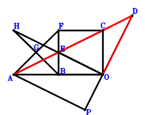
\(\because \) E is the midpoint of AC \(\therefore \small\overrightarrow{OE}=\dfrac{\small\overrightarrow{OA}}{2} + \dfrac{\small\overrightarrow{OC}}{2}\).\(\because \) FBOC is a parallelogram \(\therefore \small\overrightarrow{OF}=\small\overrightarrow{OB} + \small\overrightarrow{OC}\).\(\because \) G is the midpoint of AF \(\therefore \small\overrightarrow{OG}=\dfrac{\small\overrightarrow{OA}}{2} + \dfrac{\small\overrightarrow{OF}}{2}=\dfrac{\small\overrightarrow{OA}}{2} + \dfrac{\small\overrightarrow{OB}}{2} + \dfrac{\small\overrightarrow{OC}}{2}\).\(\because \) G is the midpoint of HB \(\therefore \small\overrightarrow{OH}=- \small\overrightarrow{OB} + 2 \small\overrightarrow{OG}=\small\overrightarrow{OA} + \small\overrightarrow{OC}\).\(\because \) EO⊥PD \(\therefore \small\overrightarrow{DP} \cdot \small\overrightarrow{OE}=\small\overrightarrow{OE} \cdot \left(- \small\overrightarrow{OD} + \small\overrightarrow{OP}\right)=\left(\dfrac{\small\overrightarrow{OA}}{2} + \dfrac{\small\overrightarrow{OC}}{2}\right) \cdot \left(- \small\overrightarrow{OD} + \small\overrightarrow{OP}\right)=- \dfrac{\small\overrightarrow{OA} \cdot \small\overrightarrow{OD}}{2} + \dfrac{\small\overrightarrow{OA} \cdot \small\overrightarrow{OP}}{2} - \dfrac{\small\overrightarrow{OC} \cdot \small\overrightarrow{OD}}{2} + \dfrac{\small\overrightarrow{OC} \cdot \small\overrightarrow{OP}}{2}=0\) . . . . . . \(①\)\(\because \) AP//HO and \(AO^{2}=AP \cdot HO\) \(\therefore \small\overrightarrow{HO} \cdot \small\overrightarrow{PA} + \small\overrightarrow{OA}^{2}=\small\overrightarrow{OA}^{2} - \small\overrightarrow{OH} \cdot \left(\small\overrightarrow{OA} - \small\overrightarrow{OP}\right)=\small\overrightarrow{OA}^{2} - \left(\small\overrightarrow{OA} + \small\overrightarrow{OC}\right) \cdot \left(\small\overrightarrow{OA} - \small\overrightarrow{OP}\right)=- \small\overrightarrow{OA} \cdot \small\overrightarrow{OC} + \small\overrightarrow{OA} \cdot \small\overrightarrow{OP} + \small\overrightarrow{OC} \cdot \small\overrightarrow{OP}=0\) . . . . . . \(②\)In conclusion, \(\small\overrightarrow{AD} \cdot \small\overrightarrow{CD} - \small\overrightarrow{OD}^{2}=- \small\overrightarrow{OD}^{2} + \left(- \small\overrightarrow{OA} + \small\overrightarrow{OD}\right) \cdot \left(- \small\overrightarrow{OC} + \small\overrightarrow{OD}\right)=\small\overrightarrow{OA} \cdot \small\overrightarrow{OC} - \small\overrightarrow{OA} \cdot \small\overrightarrow{OD} - \small\overrightarrow{OC} \cdot \small\overrightarrow{OD}=2\cdot①-②=0\)\(\because\) A, C, D are collinear \(\therefore\) \(OD^{2}=AD \cdot CD\).
Exercise 728： Let GAOF be a trapezoid with AO//GF and AO=2GF. F, E, G are the midpoints of CB, AC, HO, respectively. EO⊥DP. AP//HB and \(AO^{2}=AP \cdot HB\). Given that D, A, C are collinear, prove that \(DO^{2}=DA \cdot DC\).
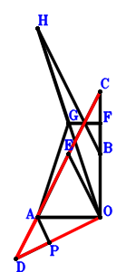
\(\because \) E is the midpoint of AC \(\therefore \small\overrightarrow{OE}=\dfrac{\small\overrightarrow{OA}}{2} + \dfrac{\small\overrightarrow{OC}}{2}\).\(\because \) F is the midpoint of CB \(\therefore \small\overrightarrow{OF}=\dfrac{\small\overrightarrow{OB}}{2} + \dfrac{\small\overrightarrow{OC}}{2}\).\(\because \) AO//GF and AO=2GF \(\therefore \small\overrightarrow{OG}=\dfrac{\small\overrightarrow{OA}}{2} + \dfrac{\small\overrightarrow{OB}}{2} + \dfrac{\small\overrightarrow{OC}}{2}\).\(\because \) G is the midpoint of HO \(\therefore \small\overrightarrow{OH}=2 \small\overrightarrow{OG}=\small\overrightarrow{OA} + \small\overrightarrow{OB} + \small\overrightarrow{OC}\).\(\because \) EO⊥DP \(\therefore \small\overrightarrow{DP} \cdot \small\overrightarrow{OE}=\small\overrightarrow{OE} \cdot \left(- \small\overrightarrow{OD} + \small\overrightarrow{OP}\right)=\left(\dfrac{\small\overrightarrow{OA}}{2} + \dfrac{\small\overrightarrow{OC}}{2}\right) \cdot \left(- \small\overrightarrow{OD} + \small\overrightarrow{OP}\right)=- \dfrac{\small\overrightarrow{OA} \cdot \small\overrightarrow{OD}}{2} + \dfrac{\small\overrightarrow{OA} \cdot \small\overrightarrow{OP}}{2} - \dfrac{\small\overrightarrow{OC} \cdot \small\overrightarrow{OD}}{2} + \dfrac{\small\overrightarrow{OC} \cdot \small\overrightarrow{OP}}{2}=0\) . . . . . . \(①\)\(\because \) AP//HB and \(AO^{2}=AP \cdot HB\) \(\therefore \small\overrightarrow{HB} \cdot \small\overrightarrow{PA} + \small\overrightarrow{OA}^{2}=\small\overrightarrow{OA}^{2} + \left(\small\overrightarrow{OA} - \small\overrightarrow{OP}\right) \cdot \left(\small\overrightarrow{OB} - \small\overrightarrow{OH}\right)=\small\overrightarrow{OA}^{2} + \left(- \small\overrightarrow{OA} - \small\overrightarrow{OC}\right) \cdot \left(\small\overrightarrow{OA} - \small\overrightarrow{OP}\right)=- \small\overrightarrow{OA} \cdot \small\overrightarrow{OC} + \small\overrightarrow{OA} \cdot \small\overrightarrow{OP} + \small\overrightarrow{OC} \cdot \small\overrightarrow{OP}=0\) . . . . . . \(②\)In conclusion, \(\small\overrightarrow{AD} \cdot \small\overrightarrow{CD} - \small\overrightarrow{OD}^{2}=- \small\overrightarrow{OD}^{2} + \left(- \small\overrightarrow{OA} + \small\overrightarrow{OD}\right) \cdot \left(- \small\overrightarrow{OC} + \small\overrightarrow{OD}\right)=\small\overrightarrow{OA} \cdot \small\overrightarrow{OC} - \small\overrightarrow{OA} \cdot \small\overrightarrow{OD} - \small\overrightarrow{OC} \cdot \small\overrightarrow{OD}=2\cdot①-②=0\)\(\because\) D, A, C are collinear \(\therefore\) \(DO^{2}=DA \cdot DC\).
Exercise 733： Let CBGO be a parallelogram. H, E, F are the midpoints of GO, AC, AB, respectively. EO⊥PD. AP//FH and \(AO^{2}=2 AP \cdot FH\). Given that A, C, D are collinear, prove that \(OD^{2}=AD \cdot CD\).
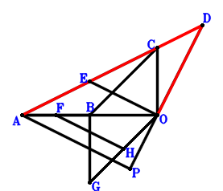
\(\because \) E is the midpoint of AC \(\therefore \small\overrightarrow{OE}=\dfrac{\small\overrightarrow{OA}}{2} + \dfrac{\small\overrightarrow{OC}}{2}\).\(\because \) F is the midpoint of AB \(\therefore \small\overrightarrow{OF}=\dfrac{\small\overrightarrow{OA}}{2} + \dfrac{\small\overrightarrow{OB}}{2}\).\(\because \) CBGO is a parallelogram \(\therefore \small\overrightarrow{OG}=\small\overrightarrow{OB} - \small\overrightarrow{OC}\).\(\because \) H is the midpoint of GO \(\therefore \small\overrightarrow{OH}=\dfrac{\small\overrightarrow{OG}}{2}=\dfrac{\small\overrightarrow{OB}}{2} - \dfrac{\small\overrightarrow{OC}}{2}\).\(\because \) EO⊥PD \(\therefore \small\overrightarrow{DP} \cdot \small\overrightarrow{OE}=\small\overrightarrow{OE} \cdot \left(- \small\overrightarrow{OD} + \small\overrightarrow{OP}\right)=\left(\dfrac{\small\overrightarrow{OA}}{2} + \dfrac{\small\overrightarrow{OC}}{2}\right) \cdot \left(- \small\overrightarrow{OD} + \small\overrightarrow{OP}\right)=- \dfrac{\small\overrightarrow{OA} \cdot \small\overrightarrow{OD}}{2} + \dfrac{\small\overrightarrow{OA} \cdot \small\overrightarrow{OP}}{2} - \dfrac{\small\overrightarrow{OC} \cdot \small\overrightarrow{OD}}{2} + \dfrac{\small\overrightarrow{OC} \cdot \small\overrightarrow{OP}}{2}=0\) . . . . . . \(①\)\(\because \) AP//FH and \(AO^{2}=2 AP \cdot FH\) \(\therefore 2 \small\overrightarrow{FH} \cdot \small\overrightarrow{PA} + \small\overrightarrow{OA}^{2}=\small\overrightarrow{OA}^{2} + 2 \left(\small\overrightarrow{OA} - \small\overrightarrow{OP}\right) \cdot \left(- \small\overrightarrow{OF} + \small\overrightarrow{OH}\right)=\small\overrightarrow{OA}^{2} + 2 \left(- \dfrac{\small\overrightarrow{OA}}{2} - \dfrac{\small\overrightarrow{OC}}{2}\right) \cdot \left(\small\overrightarrow{OA} - \small\overrightarrow{OP}\right)=- \small\overrightarrow{OA} \cdot \small\overrightarrow{OC} + \small\overrightarrow{OA} \cdot \small\overrightarrow{OP} + \small\overrightarrow{OC} \cdot \small\overrightarrow{OP}=0\) . . . . . . \(②\)In conclusion, \(\small\overrightarrow{AD} \cdot \small\overrightarrow{CD} - \small\overrightarrow{OD}^{2}=- \small\overrightarrow{OD}^{2} + \left(- \small\overrightarrow{OA} + \small\overrightarrow{OD}\right) \cdot \left(- \small\overrightarrow{OC} + \small\overrightarrow{OD}\right)=\small\overrightarrow{OA} \cdot \small\overrightarrow{OC} - \small\overrightarrow{OA} \cdot \small\overrightarrow{OD} - \small\overrightarrow{OC} \cdot \small\overrightarrow{OD}=2\cdot①-②=0\)\(\because\) A, C, D are collinear \(\therefore\) \(OD^{2}=AD \cdot CD\).
Exercise 734： Let GCBF and FBOA be parallelograms. E is the midpoint of CA. EO⊥PD. AP//GO and \(AO^{2}=AP \cdot GO\). Given that C, A, D are collinear, prove that \(OD^{2}=AD \cdot CD\).
Exercise 746： Let AGHO be a parallelogram. E is the midpoint of AC. F is the midpoint of BO and GC. EO⊥PD. BH//AP and \(AO^{2}=AP \cdot BH\). Given that A, C, D are collinear, prove that \(OD^{2}=AD \cdot CD\).
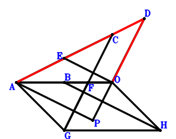
\(\because \) E is the midpoint of AC \(\therefore \small\overrightarrow{OE}=\dfrac{\small\overrightarrow{OA}}{2} + \dfrac{\small\overrightarrow{OC}}{2}\).\(\because \) F is the midpoint of BO \(\therefore \small\overrightarrow{OF}=\dfrac{\small\overrightarrow{OB}}{2}\).\(\because \) F is the midpoint of GC \(\therefore \small\overrightarrow{OG}=- \small\overrightarrow{OC} + 2 \small\overrightarrow{OF}=\small\overrightarrow{OB} - \small\overrightarrow{OC}\).\(\because \) AGHO is a parallelogram \(\therefore \small\overrightarrow{OH}=- \small\overrightarrow{OA} + \small\overrightarrow{OB} - \small\overrightarrow{OC}\).\(\because \) EO⊥PD \(\therefore \small\overrightarrow{DP} \cdot \small\overrightarrow{OE}=\small\overrightarrow{OE} \cdot \left(- \small\overrightarrow{OD} + \small\overrightarrow{OP}\right)=\left(\dfrac{\small\overrightarrow{OA}}{2} + \dfrac{\small\overrightarrow{OC}}{2}\right) \cdot \left(- \small\overrightarrow{OD} + \small\overrightarrow{OP}\right)=- \dfrac{\small\overrightarrow{OA} \cdot \small\overrightarrow{OD}}{2} + \dfrac{\small\overrightarrow{OA} \cdot \small\overrightarrow{OP}}{2} - \dfrac{\small\overrightarrow{OC} \cdot \small\overrightarrow{OD}}{2} + \dfrac{\small\overrightarrow{OC} \cdot \small\overrightarrow{OP}}{2}=0\) . . . . . . \(①\)\(\because \) BH//AP and \(AO^{2}=AP \cdot BH\) \(\therefore \small\overrightarrow{BH} \cdot \small\overrightarrow{PA} + \small\overrightarrow{OA}^{2}=\small\overrightarrow{OA}^{2} + \left(\small\overrightarrow{OA} - \small\overrightarrow{OP}\right) \cdot \left(- \small\overrightarrow{OB} + \small\overrightarrow{OH}\right)=\small\overrightarrow{OA}^{2} + \left(- \small\overrightarrow{OA} - \small\overrightarrow{OC}\right) \cdot \left(\small\overrightarrow{OA} - \small\overrightarrow{OP}\right)=- \small\overrightarrow{OA} \cdot \small\overrightarrow{OC} + \small\overrightarrow{OA} \cdot \small\overrightarrow{OP} + \small\overrightarrow{OC} \cdot \small\overrightarrow{OP}=0\) . . . . . . \(②\)In conclusion, \(\small\overrightarrow{AD} \cdot \small\overrightarrow{CD} - \small\overrightarrow{OD}^{2}=- \small\overrightarrow{OD}^{2} + \left(- \small\overrightarrow{OA} + \small\overrightarrow{OD}\right) \cdot \left(- \small\overrightarrow{OC} + \small\overrightarrow{OD}\right)=\small\overrightarrow{OA} \cdot \small\overrightarrow{OC} - \small\overrightarrow{OA} \cdot \small\overrightarrow{OD} - \small\overrightarrow{OC} \cdot \small\overrightarrow{OD}=2\cdot①-②=0\)\(\because\) A, C, D are collinear \(\therefore\) \(OD^{2}=AD \cdot CD\).
Exercise 759： Let HCGF be a trapezoid with HC//FG and HC=2FG. E, G, F are the midpoints of CA, BO, BA, respectively. EO⊥DP. AP//HO and \(AO^{2}=AP \cdot HO\). Given that D, C, A are collinear, prove that \(DO^{2}=DA \cdot DC\).
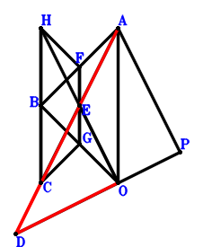
\(\because \) E is the midpoint of CA \(\therefore \small\overrightarrow{OE}=\dfrac{\small\overrightarrow{OA}}{2} + \dfrac{\small\overrightarrow{OC}}{2}\).\(\because \) F is the midpoint of BA \(\therefore \small\overrightarrow{OF}=\dfrac{\small\overrightarrow{OA}}{2} + \dfrac{\small\overrightarrow{OB}}{2}\).\(\because \) G is the midpoint of BO \(\therefore \small\overrightarrow{OG}=\dfrac{\small\overrightarrow{OB}}{2}\).\(\because \) HC//FG and HC=2FG \(\therefore \small\overrightarrow{OH}=\small\overrightarrow{OA} + \small\overrightarrow{OB} + \small\overrightarrow{OC} - 2 \small\overrightarrow{OG}=\small\overrightarrow{OA} + \small\overrightarrow{OC}\).\(\because \) EO⊥DP \(\therefore \small\overrightarrow{DP} \cdot \small\overrightarrow{OE}=\small\overrightarrow{OE} \cdot \left(- \small\overrightarrow{OD} + \small\overrightarrow{OP}\right)=\left(\dfrac{\small\overrightarrow{OA}}{2} + \dfrac{\small\overrightarrow{OC}}{2}\right) \cdot \left(- \small\overrightarrow{OD} + \small\overrightarrow{OP}\right)=- \dfrac{\small\overrightarrow{OA} \cdot \small\overrightarrow{OD}}{2} + \dfrac{\small\overrightarrow{OA} \cdot \small\overrightarrow{OP}}{2} - \dfrac{\small\overrightarrow{OC} \cdot \small\overrightarrow{OD}}{2} + \dfrac{\small\overrightarrow{OC} \cdot \small\overrightarrow{OP}}{2}=0\) . . . . . . \(①\)\(\because \) AP//HO and \(AO^{2}=AP \cdot HO\) \(\therefore \small\overrightarrow{HO} \cdot \small\overrightarrow{PA} + \small\overrightarrow{OA}^{2}=\small\overrightarrow{OA}^{2} - \small\overrightarrow{OH} \cdot \left(\small\overrightarrow{OA} - \small\overrightarrow{OP}\right)=\small\overrightarrow{OA}^{2} - \left(\small\overrightarrow{OA} + \small\overrightarrow{OC}\right) \cdot \left(\small\overrightarrow{OA} - \small\overrightarrow{OP}\right)=- \small\overrightarrow{OA} \cdot \small\overrightarrow{OC} + \small\overrightarrow{OA} \cdot \small\overrightarrow{OP} + \small\overrightarrow{OC} \cdot \small\overrightarrow{OP}=0\) . . . . . . \(②\)In conclusion, \(\small\overrightarrow{AD} \cdot \small\overrightarrow{CD} - \small\overrightarrow{OD}^{2}=- \small\overrightarrow{OD}^{2} + \left(- \small\overrightarrow{OA} + \small\overrightarrow{OD}\right) \cdot \left(- \small\overrightarrow{OC} + \small\overrightarrow{OD}\right)=\small\overrightarrow{OA} \cdot \small\overrightarrow{OC} - \small\overrightarrow{OA} \cdot \small\overrightarrow{OD} - \small\overrightarrow{OC} \cdot \small\overrightarrow{OD}=2\cdot①-②=0\)\(\because\) D, C, A are collinear \(\therefore\) \(DO^{2}=DA \cdot DC\).
Exercise 778： Let F be the centroid of △BCA. G, F, O are collinear and 2GO=3GF. E is the midpoint of AC. OE⊥DP. PA//BG and \(AO^{2}=BG \cdot PA\). Given that D, A, C are collinear, prove that \(DO^{2}=DA \cdot DC\).
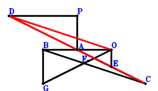
\(\because \) E is the midpoint of AC \(\therefore \small\overrightarrow{AE}=\dfrac{\small\overrightarrow{AC}}{2}\).\(\because \) F is the centroid of △BCA \(\therefore \small\overrightarrow{AF}=\dfrac{\small\overrightarrow{AB}}{3} + \dfrac{\small\overrightarrow{AC}}{3}\).\(\because \) G, F, O are collinear and 2GO=3GF \(\therefore \small\overrightarrow{AG}=3 \small\overrightarrow{AF} - 2 \small\overrightarrow{AO}=\small\overrightarrow{AB} + \small\overrightarrow{AC} - 2 \small\overrightarrow{AO}\).\(\because \) OE⊥DP \(\therefore \small\overrightarrow{DP} \cdot \small\overrightarrow{OE}=\left(- \small\overrightarrow{AD} + \small\overrightarrow{AP}\right) \cdot \left(\small\overrightarrow{AE} - \small\overrightarrow{AO}\right)=\left(\dfrac{\small\overrightarrow{AC}}{2} - \small\overrightarrow{AO}\right) \cdot \left(- \small\overrightarrow{AD} + \small\overrightarrow{AP}\right)=- \dfrac{\small\overrightarrow{AC} \cdot \small\overrightarrow{AD}}{2} + \dfrac{\small\overrightarrow{AC} \cdot \small\overrightarrow{AP}}{2} + \small\overrightarrow{AD} \cdot \small\overrightarrow{AO} - \small\overrightarrow{AO} \cdot \small\overrightarrow{AP}=0\) . . . . . . \(①\)\(\because \) PA//BG and \(AO^{2}=BG \cdot PA\) \(\therefore \small\overrightarrow{GB} \cdot \small\overrightarrow{PA} + \small\overrightarrow{OA}^{2}=\small\overrightarrow{AO}^{2} - \small\overrightarrow{AP} \cdot \left(\small\overrightarrow{AB} - \small\overrightarrow{AG}\right)=\small\overrightarrow{AO}^{2} - \small\overrightarrow{AP} \cdot \left(- \small\overrightarrow{AC} + 2 \small\overrightarrow{AO}\right)=\small\overrightarrow{AC} \cdot \small\overrightarrow{AP} + \small\overrightarrow{AO}^{2} - 2 \small\overrightarrow{AO} \cdot \small\overrightarrow{AP}=0\) . . . . . . \(②\)In conclusion, \(\small\overrightarrow{AD} \cdot \small\overrightarrow{CD} - \small\overrightarrow{OD}^{2}=\small\overrightarrow{AD} \cdot \left(- \small\overrightarrow{AC} + \small\overrightarrow{AD}\right) - \left(\small\overrightarrow{AD} - \small\overrightarrow{AO}\right)^{2}=- \small\overrightarrow{AC} \cdot \small\overrightarrow{AD} + 2 \small\overrightarrow{AD} \cdot \small\overrightarrow{AO} - \small\overrightarrow{AO}^{2}=2\cdot①-②=0\)\(\because\) D, A, C are collinear \(\therefore\) \(DO^{2}=DA \cdot DC\).
Exercise 783： Let BFAG be a parallelogram. O, E are the midpoints of CF, CA, respectively. OE⊥DP. PA//BG and \(OA^{2}=BG \cdot PA\). Given that D, C, A are collinear, prove that \(DO^{2}=DA \cdot DC\).
Exercise 788： Let AGFO be a trapezoid with GA//FO and GA=2FO. E, F are the midpoints of AC, BC, respectively. OE⊥DP. PA//BG and \(AO^{2}=BG \cdot PA\). Given that D, A, C are collinear, prove that \(DO^{2}=DA \cdot DC\).
Exercise 899： Let F be the centroid of △BAC. B, G, O are collinear and BG=2GO. E is the midpoint of AC. EO⊥PD. A, D, C are collinear and \(AO^{2}=AD \cdot DC\). Given that PA//FG, prove that \(DO^{2}=3 FG \cdot PA\).
Exercise 904： Let BGFA be a parallelogram. O, E are the midpoints of CF, CA, respectively. EO⊥DP. C, D, A are collinear and \(OA^{2}=CD \cdot DA\). Given that BG//PA, prove that \(DO^{2}=BG \cdot PA\).
Exercise 911： Let O, E be the midpoints of CF, CA, respectively. EO⊥DP. C, D, A are collinear and \(OA^{2}=CD \cdot DA\). Given that P, A, F are collinear, prove that \(DO^{2}=AF \cdot PA\).
Exercise 1022： Let CEFB be a parallelogram. G, O are the midpoints of CA, EA, respectively. BF⊥PA. OA=DO. Given that C, D, A are collinear and GO//DP, prove that \(CD·DA=2·DP·GO\).
Exercise 1029： Let COFB be a trapezoid with CB//OF and CB=2OF. E, G are the midpoints of BA, CA, respectively. PA⊥EF. OA=DO. Given that C, D, A are collinear and GO//DP, prove that \(CD·DA=2·DP·GO\).
Exercise 1033： Let F, O be the midpoints of CA, EA, respectively. EC⊥PA. OA=DO. Given that D, C, A are collinear and OF//DP, prove that \(DA·DC=2·DP·OF\).
Exercise 1036： Let EBAO be a trapezoid with BA//EO and BA=2EO. G, E are the midpoints of CA, FB, respectively. FC⊥AP. OA=DO. Given that D, C, A are collinear and OG//DP, prove that \(DA·DC=2·DP·OG\).
Exercise 1040： Let F, O be the midpoints of CA, CE, respectively. PA⊥AE. OA=DO. Given that C, D, A are collinear and FO//DP, prove that \(CD·DA=2·DP·FO\).
Exercise 1055： Let EOCB be a trapezoid with BC//EO and BC=2EO. G, E are the midpoints of CA, FB, respectively. FA⊥AP. OA=DO. Given that D, C, A are collinear and OG//DP, prove that \(DA·DC=2·DP·OG\).
Exercise 1107： Let CBFO be a parallelogram. AOD is a triangle with AO⊥OD and OC⊥AD where C lies on AD. E, H, G are the midpoints of AB, AC, OF, respectively. AP⊥EG. Given that HO//PD, prove that \(AO^{2}=2 HO \cdot PD\).
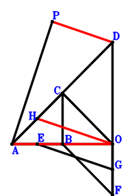
\(\because \) E is the midpoint of AB \(\therefore \small\overrightarrow{OE}=\dfrac{\small\overrightarrow{OA}}{2} + \dfrac{\small\overrightarrow{OB}}{2}\).\(\because \) CBFO is a parallelogram \(\therefore \small\overrightarrow{OF}=\small\overrightarrow{OB} - \small\overrightarrow{OC}\).\(\because \) G is the midpoint of OF \(\therefore \small\overrightarrow{OG}=\dfrac{\small\overrightarrow{OF}}{2}=\dfrac{\small\overrightarrow{OB}}{2} - \dfrac{\small\overrightarrow{OC}}{2}\).\(\because \) H is the midpoint of AC \(\therefore \small\overrightarrow{OH}=\dfrac{\small\overrightarrow{OA}}{2} + \dfrac{\small\overrightarrow{OC}}{2}\).\(\because \) AOD is a triangle with AO⊥OD and OC⊥AD where C lies on AD \(\therefore \small\overrightarrow{AD} \cdot \small\overrightarrow{CD} - \small\overrightarrow{OD}^{2}=- \small\overrightarrow{OD}^{2} + \left(- \small\overrightarrow{OA} + \small\overrightarrow{OD}\right) \cdot \left(- \small\overrightarrow{OC} + \small\overrightarrow{OD}\right)=\small\overrightarrow{OA} \cdot \small\overrightarrow{OC} - \small\overrightarrow{OA} \cdot \small\overrightarrow{OD} - \small\overrightarrow{OC} \cdot \small\overrightarrow{OD}=0\) . . . . . . \(①\)\(\because \) AP⊥EG \(\therefore \small\overrightarrow{EG} \cdot \small\overrightarrow{PA}=\left(\small\overrightarrow{OA} - \small\overrightarrow{OP}\right) \cdot \left(- \small\overrightarrow{OE} + \small\overrightarrow{OG}\right)=\left(- \dfrac{\small\overrightarrow{OA}}{2} - \dfrac{\small\overrightarrow{OC}}{2}\right) \cdot \left(\small\overrightarrow{OA} - \small\overrightarrow{OP}\right)=- \dfrac{\small\overrightarrow{OA}^{2}}{2} - \dfrac{\small\overrightarrow{OA} \cdot \small\overrightarrow{OC}}{2} + \dfrac{\small\overrightarrow{OA} \cdot \small\overrightarrow{OP}}{2} + \dfrac{\small\overrightarrow{OC} \cdot \small\overrightarrow{OP}}{2}=0\) . . . . . . \(②\)In conclusion, \(- 2 \small\overrightarrow{DP} \cdot \small\overrightarrow{OH} + \small\overrightarrow{OA}^{2}=\small\overrightarrow{OA}^{2} - 2 \small\overrightarrow{OH} \cdot \left(- \small\overrightarrow{OD} + \small\overrightarrow{OP}\right)=\small\overrightarrow{OA}^{2} - 2 \left(\dfrac{\small\overrightarrow{OA}}{2} + \dfrac{\small\overrightarrow{OC}}{2}\right) \cdot \left(- \small\overrightarrow{OD} + \small\overrightarrow{OP}\right)=\small\overrightarrow{OA}^{2} + \small\overrightarrow{OA} \cdot \small\overrightarrow{OD} - \small\overrightarrow{OA} \cdot \small\overrightarrow{OP} + \small\overrightarrow{OC} \cdot \small\overrightarrow{OD} - \small\overrightarrow{OC} \cdot \small\overrightarrow{OP}=-①-2\cdot②=0\)\(\because\) HO//PD \(\therefore\) \(AO^{2}=2 HO \cdot PD\).
Exercise 1150： Let AOD be a triangle with AO⊥OD and OC⊥AD where C lies on AD. C, F, G are collinear and CG=3FG. O, F, B are collinear and FB=2OF. E, H are the midpoints of AB, CA, respectively. PA⊥GE. Given that OH//DP, prove that \(OA^{2}=2 DP \cdot OH\).
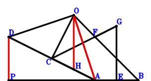
\(\because \) E is the midpoint of AB \(\therefore \small\overrightarrow{AE}=\dfrac{\small\overrightarrow{AB}}{2}\).\(\because \) O, F, B are collinear and FB=2OF \(\therefore \small\overrightarrow{AF}=\dfrac{\small\overrightarrow{AB}}{3} + \dfrac{2 \small\overrightarrow{AO}}{3}\).\(\because \) C, F, G are collinear and CG=3FG \(\therefore \small\overrightarrow{AG}=- \dfrac{\small\overrightarrow{AC}}{2} + \dfrac{3 \small\overrightarrow{AF}}{2}=\dfrac{\small\overrightarrow{AB}}{2} - \dfrac{\small\overrightarrow{AC}}{2} + \small\overrightarrow{AO}\).\(\because \) H is the midpoint of CA \(\therefore \small\overrightarrow{AH}=\dfrac{\small\overrightarrow{AC}}{2}\).\(\because \) AOD is a triangle with AO⊥OD and OC⊥AD where C lies on AD \(\therefore \small\overrightarrow{AD} \cdot \small\overrightarrow{CD} - \small\overrightarrow{OD}^{2}=\small\overrightarrow{AD} \cdot \left(- \small\overrightarrow{AC} + \small\overrightarrow{AD}\right) - \left(\small\overrightarrow{AD} - \small\overrightarrow{AO}\right)^{2}=- \small\overrightarrow{AC} \cdot \small\overrightarrow{AD} + 2 \small\overrightarrow{AD} \cdot \small\overrightarrow{AO} - \small\overrightarrow{AO}^{2}=0\) . . . . . . \(①\)\(\because \) PA⊥GE \(\therefore \small\overrightarrow{EG} \cdot \small\overrightarrow{PA}=- \small\overrightarrow{AP} \cdot \left(- \small\overrightarrow{AE} + \small\overrightarrow{AG}\right)=- \small\overrightarrow{AP} \cdot \left(- \dfrac{\small\overrightarrow{AC}}{2} + \small\overrightarrow{AO}\right)=\dfrac{\small\overrightarrow{AC} \cdot \small\overrightarrow{AP}}{2} - \small\overrightarrow{AO} \cdot \small\overrightarrow{AP}=0\) . . . . . . \(②\)In conclusion, \(- 2 \small\overrightarrow{DP} \cdot \small\overrightarrow{OH} + \small\overrightarrow{OA}^{2}=\small\overrightarrow{AO}^{2} - 2 \left(- \small\overrightarrow{AD} + \small\overrightarrow{AP}\right) \cdot \left(\small\overrightarrow{AH} - \small\overrightarrow{AO}\right)=\small\overrightarrow{AO}^{2} - 2 \left(\dfrac{\small\overrightarrow{AC}}{2} - \small\overrightarrow{AO}\right) \cdot \left(- \small\overrightarrow{AD} + \small\overrightarrow{AP}\right)=\small\overrightarrow{AC} \cdot \small\overrightarrow{AD} - \small\overrightarrow{AC} \cdot \small\overrightarrow{AP} - 2 \small\overrightarrow{AD} \cdot \small\overrightarrow{AO} + \small\overrightarrow{AO}^{2} + 2 \small\overrightarrow{AO} \cdot \small\overrightarrow{AP}=-①-2\cdot②=0\)\(\because\) OH//DP \(\therefore\) \(OA^{2}=2 DP \cdot OH\).
Exercise 1152： Let E be the centroid of △BAC. AOD is a triangle with AO⊥OD and OC⊥AD where C lies on AD. F, E, O are collinear and 2FO=3FE. G is the midpoint of AC. AP⊥BF. Given that OG//DP, prove that \(AO^{2}=2 DP \cdot OG\).
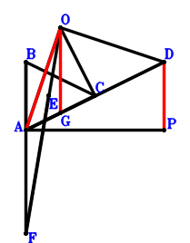
\(\because \) E is the centroid of △BAC \(\therefore \small\overrightarrow{AE}=\dfrac{\small\overrightarrow{AB}}{3} + \dfrac{\small\overrightarrow{AC}}{3}\).\(\because \) F, E, O are collinear and 2FO=3FE \(\therefore \small\overrightarrow{AF}=3 \small\overrightarrow{AE} - 2 \small\overrightarrow{AO}=\small\overrightarrow{AB} + \small\overrightarrow{AC} - 2 \small\overrightarrow{AO}\).\(\because \) G is the midpoint of AC \(\therefore \small\overrightarrow{AG}=\dfrac{\small\overrightarrow{AC}}{2}\).\(\because \) AOD is a triangle with AO⊥OD and OC⊥AD where C lies on AD \(\therefore \small\overrightarrow{AD} \cdot \small\overrightarrow{CD} - \small\overrightarrow{OD}^{2}=\small\overrightarrow{AD} \cdot \left(- \small\overrightarrow{AC} + \small\overrightarrow{AD}\right) - \left(\small\overrightarrow{AD} - \small\overrightarrow{AO}\right)^{2}=- \small\overrightarrow{AC} \cdot \small\overrightarrow{AD} + 2 \small\overrightarrow{AD} \cdot \small\overrightarrow{AO} - \small\overrightarrow{AO}^{2}=0\) . . . . . . \(①\)\(\because \) AP⊥BF \(\therefore \small\overrightarrow{FB} \cdot \small\overrightarrow{PA}=- \small\overrightarrow{AP} \cdot \left(\small\overrightarrow{AB} - \small\overrightarrow{AF}\right)=- \small\overrightarrow{AP} \cdot \left(- \small\overrightarrow{AC} + 2 \small\overrightarrow{AO}\right)=\small\overrightarrow{AC} \cdot \small\overrightarrow{AP} - 2 \small\overrightarrow{AO} \cdot \small\overrightarrow{AP}=0\) . . . . . . \(②\)In conclusion, \(- 2 \small\overrightarrow{DP} \cdot \small\overrightarrow{OG} + \small\overrightarrow{OA}^{2}=\small\overrightarrow{AO}^{2} - 2 \left(- \small\overrightarrow{AD} + \small\overrightarrow{AP}\right) \cdot \left(\small\overrightarrow{AG} - \small\overrightarrow{AO}\right)=\small\overrightarrow{AO}^{2} - 2 \left(\dfrac{\small\overrightarrow{AC}}{2} - \small\overrightarrow{AO}\right) \cdot \left(- \small\overrightarrow{AD} + \small\overrightarrow{AP}\right)=\small\overrightarrow{AC} \cdot \small\overrightarrow{AD} - \small\overrightarrow{AC} \cdot \small\overrightarrow{AP} - 2 \small\overrightarrow{AD} \cdot \small\overrightarrow{AO} + \small\overrightarrow{AO}^{2} + 2 \small\overrightarrow{AO} \cdot \small\overrightarrow{AP}=-①-②=0\)\(\because\) OG//DP \(\therefore\) \(AO^{2}=2 DP \cdot OG\).
Exercise 1155： Let EBFC be a parallelogram. AOD is a triangle with AO⊥OD and OC⊥AD where C lies on AD. G, O are the midpoints of AC, AE, respectively. AP⊥BF. Given that OG//DP, prove that \(AO^{2}=2 DP \cdot OG\).
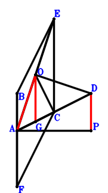
\(\because \) O is the midpoint of AE \(\therefore \small\overrightarrow{AE}=2 \small\overrightarrow{AO}\).\(\because \) EBFC is a parallelogram \(\therefore \small\overrightarrow{AF}=\small\overrightarrow{AB} + \small\overrightarrow{AC} - \small\overrightarrow{AE}=\small\overrightarrow{AB} + \small\overrightarrow{AC} - 2 \small\overrightarrow{AO}\).\(\because \) G is the midpoint of AC \(\therefore \small\overrightarrow{AG}=\dfrac{\small\overrightarrow{AC}}{2}\).\(\because \) AOD is a triangle with AO⊥OD and OC⊥AD where C lies on AD \(\therefore \small\overrightarrow{AD} \cdot \small\overrightarrow{CD} - \small\overrightarrow{OD}^{2}=\small\overrightarrow{AD} \cdot \left(- \small\overrightarrow{AC} + \small\overrightarrow{AD}\right) - \left(\small\overrightarrow{AD} - \small\overrightarrow{AO}\right)^{2}=- \small\overrightarrow{AC} \cdot \small\overrightarrow{AD} + 2 \small\overrightarrow{AD} \cdot \small\overrightarrow{AO} - \small\overrightarrow{AO}^{2}=0\) . . . . . . \(①\)\(\because \) AP⊥BF \(\therefore \small\overrightarrow{FB} \cdot \small\overrightarrow{PA}=- \small\overrightarrow{AP} \cdot \left(\small\overrightarrow{AB} - \small\overrightarrow{AF}\right)=- \small\overrightarrow{AP} \cdot \left(- \small\overrightarrow{AC} + 2 \small\overrightarrow{AO}\right)=\small\overrightarrow{AC} \cdot \small\overrightarrow{AP} - 2 \small\overrightarrow{AO} \cdot \small\overrightarrow{AP}=0\) . . . . . . \(②\)In conclusion, \(- 2 \small\overrightarrow{DP} \cdot \small\overrightarrow{OG} + \small\overrightarrow{OA}^{2}=\small\overrightarrow{AO}^{2} - 2 \left(- \small\overrightarrow{AD} + \small\overrightarrow{AP}\right) \cdot \left(\small\overrightarrow{AG} - \small\overrightarrow{AO}\right)=\small\overrightarrow{AO}^{2} - 2 \left(\dfrac{\small\overrightarrow{AC}}{2} - \small\overrightarrow{AO}\right) \cdot \left(- \small\overrightarrow{AD} + \small\overrightarrow{AP}\right)=\small\overrightarrow{AC} \cdot \small\overrightarrow{AD} - \small\overrightarrow{AC} \cdot \small\overrightarrow{AP} - 2 \small\overrightarrow{AD} \cdot \small\overrightarrow{AO} + \small\overrightarrow{AO}^{2} + 2 \small\overrightarrow{AO} \cdot \small\overrightarrow{AP}=-①-②=0\)\(\because\) OG//DP \(\therefore\) \(AO^{2}=2 DP \cdot OG\).
Exercise 1162： Let OEFA be a trapezoid with FA//EO and FA=2EO. AOD is a triangle with AO⊥OD and OC⊥AD where C lies on AD. G, E are the midpoints of AC, BC, respectively. AP⊥BF. Given that OG//DP, prove that \(AO^{2}=2 DP \cdot OG\).
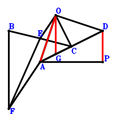
\(\because \) E is the midpoint of BC \(\therefore \small\overrightarrow{AE}=\dfrac{\small\overrightarrow{AB}}{2} + \dfrac{\small\overrightarrow{AC}}{2}\).\(\because \) FA//EO and FA=2EO \(\therefore \small\overrightarrow{AF}=2 \small\overrightarrow{AE} - 2 \small\overrightarrow{AO}=\small\overrightarrow{AB} + \small\overrightarrow{AC} - 2 \small\overrightarrow{AO}\).\(\because \) G is the midpoint of AC \(\therefore \small\overrightarrow{AG}=\dfrac{\small\overrightarrow{AC}}{2}\).\(\because \) AOD is a triangle with AO⊥OD and OC⊥AD where C lies on AD \(\therefore \small\overrightarrow{AD} \cdot \small\overrightarrow{CD} - \small\overrightarrow{OD}^{2}=\small\overrightarrow{AD} \cdot \left(- \small\overrightarrow{AC} + \small\overrightarrow{AD}\right) - \left(\small\overrightarrow{AD} - \small\overrightarrow{AO}\right)^{2}=- \small\overrightarrow{AC} \cdot \small\overrightarrow{AD} + 2 \small\overrightarrow{AD} \cdot \small\overrightarrow{AO} - \small\overrightarrow{AO}^{2}=0\) . . . . . . \(①\)\(\because \) AP⊥BF \(\therefore \small\overrightarrow{FB} \cdot \small\overrightarrow{PA}=- \small\overrightarrow{AP} \cdot \left(\small\overrightarrow{AB} - \small\overrightarrow{AF}\right)=- \small\overrightarrow{AP} \cdot \left(- \small\overrightarrow{AC} + 2 \small\overrightarrow{AO}\right)=\small\overrightarrow{AC} \cdot \small\overrightarrow{AP} - 2 \small\overrightarrow{AO} \cdot \small\overrightarrow{AP}=0\) . . . . . . \(②\)In conclusion, \(- 2 \small\overrightarrow{DP} \cdot \small\overrightarrow{OG} + \small\overrightarrow{OA}^{2}=\small\overrightarrow{AO}^{2} - 2 \left(- \small\overrightarrow{AD} + \small\overrightarrow{AP}\right) \cdot \left(\small\overrightarrow{AG} - \small\overrightarrow{AO}\right)=\small\overrightarrow{AO}^{2} - 2 \left(\dfrac{\small\overrightarrow{AC}}{2} - \small\overrightarrow{AO}\right) \cdot \left(- \small\overrightarrow{AD} + \small\overrightarrow{AP}\right)=\small\overrightarrow{AC} \cdot \small\overrightarrow{AD} - \small\overrightarrow{AC} \cdot \small\overrightarrow{AP} - 2 \small\overrightarrow{AD} \cdot \small\overrightarrow{AO} + \small\overrightarrow{AO}^{2} + 2 \small\overrightarrow{AO} \cdot \small\overrightarrow{AP}=-①-②=0\)\(\because\) OG//DP \(\therefore\) \(AO^{2}=2 DP \cdot OG\).
Exercise 1174： Let OEBC be a trapezoid with BC//EO and BC=2EO. AOD is a triangle with AO⊥OD and OC⊥AD where C lies on AD. G, E are the midpoints of AC, FA, respectively. FB⊥AP. Given that OG//DP, prove that \(AO^{2}=2 DP \cdot OG\).
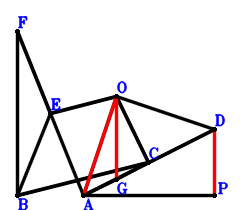
\(\because \) BC//EO and BC=2EO \(\therefore \small\overrightarrow{AE}=\dfrac{\small\overrightarrow{AB}}{2} - \dfrac{\small\overrightarrow{AC}}{2} + \small\overrightarrow{AO}\).\(\because \) E is the midpoint of FA \(\therefore \small\overrightarrow{AF}=2 \small\overrightarrow{AE}=\small\overrightarrow{AB} - \small\overrightarrow{AC} + 2 \small\overrightarrow{AO}\).\(\because \) G is the midpoint of AC \(\therefore \small\overrightarrow{AG}=\dfrac{\small\overrightarrow{AC}}{2}\).\(\because \) AOD is a triangle with AO⊥OD and OC⊥AD where C lies on AD \(\therefore \small\overrightarrow{AD} \cdot \small\overrightarrow{CD} - \small\overrightarrow{OD}^{2}=\small\overrightarrow{AD} \cdot \left(- \small\overrightarrow{AC} + \small\overrightarrow{AD}\right) - \left(\small\overrightarrow{AD} - \small\overrightarrow{AO}\right)^{2}=- \small\overrightarrow{AC} \cdot \small\overrightarrow{AD} + 2 \small\overrightarrow{AD} \cdot \small\overrightarrow{AO} - \small\overrightarrow{AO}^{2}=0\) . . . . . . \(①\)\(\because \) FB⊥AP \(\therefore \small\overrightarrow{BF} \cdot \small\overrightarrow{PA}=- \small\overrightarrow{AP} \cdot \left(- \small\overrightarrow{AB} + \small\overrightarrow{AF}\right)=- \small\overrightarrow{AP} \cdot \left(- \small\overrightarrow{AC} + 2 \small\overrightarrow{AO}\right)=\small\overrightarrow{AC} \cdot \small\overrightarrow{AP} - 2 \small\overrightarrow{AO} \cdot \small\overrightarrow{AP}=0\) . . . . . . \(②\)In conclusion, \(- 2 \small\overrightarrow{DP} \cdot \small\overrightarrow{OG} + \small\overrightarrow{OA}^{2}=\small\overrightarrow{AO}^{2} - 2 \left(- \small\overrightarrow{AD} + \small\overrightarrow{AP}\right) \cdot \left(\small\overrightarrow{AG} - \small\overrightarrow{AO}\right)=\small\overrightarrow{AO}^{2} - 2 \left(\dfrac{\small\overrightarrow{AC}}{2} - \small\overrightarrow{AO}\right) \cdot \left(- \small\overrightarrow{AD} + \small\overrightarrow{AP}\right)=\small\overrightarrow{AC} \cdot \small\overrightarrow{AD} - \small\overrightarrow{AC} \cdot \small\overrightarrow{AP} - 2 \small\overrightarrow{AD} \cdot \small\overrightarrow{AO} + \small\overrightarrow{AO}^{2} + 2 \small\overrightarrow{AO} \cdot \small\overrightarrow{AP}=-①-②=0\)\(\because\) OG//DP \(\therefore\) \(AO^{2}=2 DP \cdot OG\).
Exercise 1185： Let CBEO be a parallelogram. AOD is a triangle with AO⊥OD and OC⊥AD where C lies on AD. H is the midpoint of AC. F is the midpoint of OE and BG. PA⊥AG. Given that HO//PD, prove that \(AO^{2}=2 HO \cdot PD\).
\(\because \) CBEO is a parallelogram \(\therefore \small\overrightarrow{OE}=\small\overrightarrow{OB} - \small\overrightarrow{OC}\).\(\because \) F is the midpoint of OE \(\therefore \small\overrightarrow{OF}=\dfrac{\small\overrightarrow{OE}}{2}=\dfrac{\small\overrightarrow{OB}}{2} - \dfrac{\small\overrightarrow{OC}}{2}\).\(\because \) F is the midpoint of BG \(\therefore \small\overrightarrow{OG}=- \small\overrightarrow{OB} + 2 \small\overrightarrow{OF}=- \small\overrightarrow{OC}\).\(\because \) H is the midpoint of AC \(\therefore \small\overrightarrow{OH}=\dfrac{\small\overrightarrow{OA}}{2} + \dfrac{\small\overrightarrow{OC}}{2}\).\(\because \) AOD is a triangle with AO⊥OD and OC⊥AD where C lies on AD \(\therefore \small\overrightarrow{AD} \cdot \small\overrightarrow{CD} - \small\overrightarrow{OD}^{2}=- \small\overrightarrow{OD}^{2} + \left(- \small\overrightarrow{OA} + \small\overrightarrow{OD}\right) \cdot \left(- \small\overrightarrow{OC} + \small\overrightarrow{OD}\right)=\small\overrightarrow{OA} \cdot \small\overrightarrow{OC} - \small\overrightarrow{OA} \cdot \small\overrightarrow{OD} - \small\overrightarrow{OC} \cdot \small\overrightarrow{OD}=0\) . . . . . . \(①\)\(\because \) PA⊥AG \(\therefore \small\overrightarrow{AG} \cdot \small\overrightarrow{PA}=\left(- \small\overrightarrow{OA} + \small\overrightarrow{OG}\right) \cdot \left(\small\overrightarrow{OA} - \small\overrightarrow{OP}\right)=\left(- \small\overrightarrow{OA} - \small\overrightarrow{OC}\right) \cdot \left(\small\overrightarrow{OA} - \small\overrightarrow{OP}\right)=- \small\overrightarrow{OA}^{2} - \small\overrightarrow{OA} \cdot \small\overrightarrow{OC} + \small\overrightarrow{OA} \cdot \small\overrightarrow{OP} + \small\overrightarrow{OC} \cdot \small\overrightarrow{OP}=0\) . . . . . . \(②\)In conclusion, \(- 2 \small\overrightarrow{DP} \cdot \small\overrightarrow{OH} + \small\overrightarrow{OA}^{2}=\small\overrightarrow{OA}^{2} - 2 \small\overrightarrow{OH} \cdot \left(- \small\overrightarrow{OD} + \small\overrightarrow{OP}\right)=\small\overrightarrow{OA}^{2} - 2 \left(\dfrac{\small\overrightarrow{OA}}{2} + \dfrac{\small\overrightarrow{OC}}{2}\right) \cdot \left(- \small\overrightarrow{OD} + \small\overrightarrow{OP}\right)=\small\overrightarrow{OA}^{2} + \small\overrightarrow{OA} \cdot \small\overrightarrow{OD} - \small\overrightarrow{OA} \cdot \small\overrightarrow{OP} + \small\overrightarrow{OC} \cdot \small\overrightarrow{OD} - \small\overrightarrow{OC} \cdot \small\overrightarrow{OP}=-①-②=0\)\(\because\) HO//PD \(\therefore\) \(AO^{2}=2 HO \cdot PD\).
Exercise 1195： Let OCEA be a parallelogram. F is the midpoint of CA. PA⊥OE. OF//DP and \(OA^{2}=2 DP \cdot OF\). Given that D, C, A are collinear, prove that \(DO^{2}=DA \cdot DC\).
Exercise 1246： Let OBFE and CBAE be parallelograms. G is the midpoint of CA. PA⊥OF. OG//DP and \(OA^{2}=2 DP \cdot OG\). Given that D, C, A are collinear, prove that \(DO^{2}=DA \cdot DC\).
Exercise 1264： Let BCGF be a parallelogram. H is the midpoint of CA. E is the midpoint of OF and BA. PA⊥OG. OH//DP and \(OA^{2}=2 DP \cdot OH\). Given that D, C, A are collinear, prove that \(DO^{2}=DA \cdot DC\).
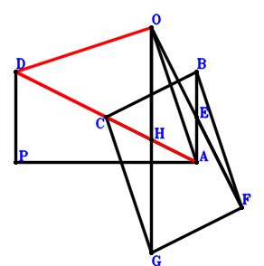
\(\because \) E is the midpoint of BA \(\therefore \small\overrightarrow{AE}=\dfrac{\small\overrightarrow{AB}}{2}\).\(\because \) E is the midpoint of OF \(\therefore \small\overrightarrow{AF}=2 \small\overrightarrow{AE} - \small\overrightarrow{AO}=\small\overrightarrow{AB} - \small\overrightarrow{AO}\).\(\because \) BCGF is a parallelogram \(\therefore \small\overrightarrow{AG}=\small\overrightarrow{AC} - \small\overrightarrow{AO}\).\(\because \) H is the midpoint of CA \(\therefore \small\overrightarrow{AH}=\dfrac{\small\overrightarrow{AC}}{2}\).\(\because \) PA⊥OG \(\therefore \small\overrightarrow{GO} \cdot \small\overrightarrow{PA}=- \small\overrightarrow{AP} \cdot \left(- \small\overrightarrow{AG} + \small\overrightarrow{AO}\right)=- \small\overrightarrow{AP} \cdot \left(- \small\overrightarrow{AC} + 2 \small\overrightarrow{AO}\right)=\small\overrightarrow{AC} \cdot \small\overrightarrow{AP} - 2 \small\overrightarrow{AO} \cdot \small\overrightarrow{AP}=0\) . . . . . . \(①\)\(\because \) OH//DP and \(OA^{2}=2 DP \cdot OH\) \(\therefore - 2 \small\overrightarrow{DP} \cdot \small\overrightarrow{OH} + \small\overrightarrow{OA}^{2}=\small\overrightarrow{AO}^{2} - 2 \left(- \small\overrightarrow{AD} + \small\overrightarrow{AP}\right) \cdot \left(\small\overrightarrow{AH} - \small\overrightarrow{AO}\right)=\small\overrightarrow{AO}^{2} - 2 \left(\dfrac{\small\overrightarrow{AC}}{2} - \small\overrightarrow{AO}\right) \cdot \left(- \small\overrightarrow{AD} + \small\overrightarrow{AP}\right)=\small\overrightarrow{AC} \cdot \small\overrightarrow{AD} - \small\overrightarrow{AC} \cdot \small\overrightarrow{AP} - 2 \small\overrightarrow{AD} \cdot \small\overrightarrow{AO} + \small\overrightarrow{AO}^{2} + 2 \small\overrightarrow{AO} \cdot \small\overrightarrow{AP}=0\) . . . . . . \(②\)In conclusion, \(\small\overrightarrow{AD} \cdot \small\overrightarrow{CD} - \small\overrightarrow{OD}^{2}=\small\overrightarrow{AD} \cdot \left(- \small\overrightarrow{AC} + \small\overrightarrow{AD}\right) - \left(\small\overrightarrow{AD} - \small\overrightarrow{AO}\right)^{2}=- \small\overrightarrow{AC} \cdot \small\overrightarrow{AD} + 2 \small\overrightarrow{AD} \cdot \small\overrightarrow{AO} - \small\overrightarrow{AO}^{2}=-①-②=0\)\(\because\) D, C, A are collinear \(\therefore\) \(DO^{2}=DA \cdot DC\).
Exercise 1304： Let CBAE be a parallelogram. G, O are the midpoints of CA, FE, respectively. FB⊥PA. OG//DP and \(OA^{2}=2 DP \cdot OG\). Given that D, C, A are collinear, prove that \(DO^{2}=DA \cdot DC\).
Exercise 1305： Let F, O be the midpoints of CA, EA, respectively. EC⊥PA. OF//DP and \(OA^{2}=2 DP \cdot OF\). Given that D, C, A are collinear, prove that \(DO^{2}=DA \cdot DC\).
Exercise 1625： Let F, E be the midpoints of CA, BA, respectively. PA⊥CB and OE⊥PA. OA=DO. Given that D, C, A are collinear and OF//DP, prove that \(DA·DC=2·DP·OF\).
Exercise 1626： Let AOD be a triangle with AO⊥OD and OC⊥AD where C lies on AD. F, E are the midpoints of CA, BA, respectively. PA⊥CB and OE⊥PA. Given that OF//DP, prove that \(OA^{2}=2 DP \cdot OF\).
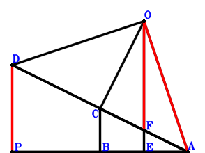
\(\because \) E is the midpoint of BA \(\therefore \small\overrightarrow{AE}=\dfrac{\small\overrightarrow{AB}}{2}\).\(\because \) F is the midpoint of CA \(\therefore \small\overrightarrow{AF}=\dfrac{\small\overrightarrow{AC}}{2}\).\(\because \) AOD is a triangle with AO⊥OD and OC⊥AD where C lies on AD \(\therefore \small\overrightarrow{AD} \cdot \small\overrightarrow{CD} - \small\overrightarrow{OD}^{2}=\small\overrightarrow{AD} \cdot \left(- \small\overrightarrow{AC} + \small\overrightarrow{AD}\right) - \left(\small\overrightarrow{AD} - \small\overrightarrow{AO}\right)^{2}=- \small\overrightarrow{AC} \cdot \small\overrightarrow{AD} + 2 \small\overrightarrow{AD} \cdot \small\overrightarrow{AO} - \small\overrightarrow{AO}^{2}=0\) . . . . . . \(①\)\(\because \) OE⊥PA \(\therefore \small\overrightarrow{AP} \cdot \small\overrightarrow{OE}=\small\overrightarrow{AP} \cdot \left(\small\overrightarrow{AE} - \small\overrightarrow{AO}\right)=\small\overrightarrow{AP} \cdot \left(\dfrac{\small\overrightarrow{AB}}{2} - \small\overrightarrow{AO}\right)=\dfrac{\small\overrightarrow{AB} \cdot \small\overrightarrow{AP}}{2} - \small\overrightarrow{AO} \cdot \small\overrightarrow{AP}=0\) . . . . . . \(②\)\(\because \) PA⊥CB \(\therefore \small\overrightarrow{CB} \cdot \small\overrightarrow{PA}=- \small\overrightarrow{AP} \cdot \left(\small\overrightarrow{AB} - \small\overrightarrow{AC}\right)=- \small\overrightarrow{AB} \cdot \small\overrightarrow{AP} + \small\overrightarrow{AC} \cdot \small\overrightarrow{AP}=0\) . . . . . . \(③\)In conclusion, \(- 2 \small\overrightarrow{DP} \cdot \small\overrightarrow{OF} + \small\overrightarrow{OA}^{2}=\small\overrightarrow{AO}^{2} - 2 \left(- \small\overrightarrow{AD} + \small\overrightarrow{AP}\right) \cdot \left(\small\overrightarrow{AF} - \small\overrightarrow{AO}\right)=\small\overrightarrow{AO}^{2} - 2 \left(\dfrac{\small\overrightarrow{AC}}{2} - \small\overrightarrow{AO}\right) \cdot \left(- \small\overrightarrow{AD} + \small\overrightarrow{AP}\right)=\small\overrightarrow{AC} \cdot \small\overrightarrow{AD} - \small\overrightarrow{AC} \cdot \small\overrightarrow{AP} - 2 \small\overrightarrow{AD} \cdot \small\overrightarrow{AO} + \small\overrightarrow{AO}^{2} + 2 \small\overrightarrow{AO} \cdot \small\overrightarrow{AP}=-①-2\cdot②-③=0\)\(\because\) OF//DP \(\therefore\) \(OA^{2}=2 DP \cdot OF\).
Exercise 1633： Let F, E be the midpoints of CA, BA, respectively. OF⊥DP and OE⊥AP. OA=DO. Given that D, C, A are collinear and AP//CB, prove that \(DA·DC=AP·CB\).